1 Introduction
Firm heterogeneity plays a central role in many economic questions. Seminal models of firm dynamics and firm size distributions, such as Lucas (1978), Hopenhayn (1992), and Melitz (2003), attribute firm heterogeneity primarily to differences in total factor productivity (TFP), assuming homogeneous returns to scale (RTS) across firms. Large and persistent TFP differences within industries have been extensively documented across countries and time periods (see Syverson (2011) for an overview), while little is known about RTS differences. In this paper, we allow for more general heterogeneity in production technologies by focusing on RTS heterogeneity. Using a broad set of estimation methods, we first examine empirically whether larger firms have technologies that are more productive (high TFP), more scalable (high RTS), or both. Second, we demonstrate the importance of this distinction by studying the efficiency costs of misallocation due to financial frictions—an issue central to a variety of quantitative questions.
In our benchmark approach, we estimate nonparametric production functions building on Gandhi, Navarro and Rivers (2020) (henceforth GNR), which recovers output elasticities of labor, capital, and intermediate inputs—thus, RTS—along with TFP at the firm-year level. Differences in local elasticities under a common non-homothetic production function are identified from variation in input expenditure shares and from the covariance between input and output levels, controlling for the endogeneity of inputs to TFP. We extend this method by embedding it within a clustering framework to disentangle ex-ante technology differences across firms from variation in local elasticities due to non-homotheticities.
In our main empirical analysis, we use administrative panel data for the universe of incorporated Canadian firms, accounting for over 90% of private business sector output from 2001 to 2019. This dataset provides detailed balance sheet information, including revenues and the total cost of labor, capital, and intermediate inputs. To validate our results, we replicate the analysis for manufacturing plants using U.S. census data as well as for eleven European countries using the Moody’s Orbis dataset.
We start by estimating production functions for each two-digit NAICS industry. Beyond the well-documented TFP heterogeneity, we uncover substantial RTS variation among firms within the same industry. The average within-industry difference between the \(90^{th}\) and \(10^{th}\) percentiles (P90–P10) of RTS is 8 percentage points (p.p.). Interpreted as deviations from constant returns to scale, these differences are large.1 By construction, heterogeneity in RTS reflects dispersion in output elasticities of inputs. The P90–P10 of elasticities is 0.36 for intermediates and labor versus 0.08 for capital. Output elasticities closely track input revenue shares.2
Our key finding is that RTS increases with firm revenue (and alternatively with employment or value added), especially above the median. Within industries, the largest 5% of firms have 8 p.p. higher average RTS than those in the bottom 50%. This pattern is driven entirely by higher output elasticities of intermediate inputs for larger firms. Labor and capital elasticities generally decline with firm size, albeit with some variation across samples and specifications.
Equally important, RTS heterogeneity is highly persistent: firm fixed effects explain 75% of the variation conditional on age and size, and an autocovariance analysis attributes just 11% to transitory shocks. To investigate whether this persistence primarily reflects genuine technological differences across firms or non-homothetic variation along a common production function, we embed the GNR method within an iterative clustering framework that allows firms to operate distinct production technologies within industries. This approach shows that 83% of the RTS–size gradient reflects ex-ante differences across technologies rather than within-technology variation along a common production function.
TFP increases with firm revenue only up to the 90th percentile, but then levels off and declines sharply among the largest firms.3 In contrast, RTS continues to rise—convexly—for the largest firms, indicating that their size advantage reflects greater scalability rather than higher productivity. Consistent with this pattern, a decomposition exercise shows that technological heterogeneity explains roughly two thirds of firm-size dispersion within industries, with the remainder explained by TFP differences.
Our GNR approach allows for adjustment frictions and market power for capital and labor inputs but not firm-specific markups or factor-biased productivity. To address these limitations, we apply Demirer (2025)’s method, which permits heterogeneous markups and factor-augmenting productivity shocks—at the cost of stronger assumptions on the labor input choice and the functional form of the technology. We find an even steeper RTS–size gradient, consistent with the view that physical RTS increases more strongly with firm size than revenue-based RTS, as expected if markups increase with firm revenue.4 As additional robustness checks, we also estimate specifications with homogeneous relative factor elasticities but heterogeneous RTS, which similarly produce a strong RTS–size gradient, and show that the gradient becomes even more pronounced when we include intangibles in measuring firms’ capital.
Our results are remarkably consistent across countries and data sources as well. While our baseline uses data for the Canadian economy, we find a similarly strong RTS–size gradient among U.S. manufacturing plants and across eleven European countries using firm-level Orbis data—the gradient is positive in every single one and of broadly similar magnitude.
We also revisit several well-known empirical patterns in firm heterogeneity commonly attributed to TFP differences. We find that RTS is a stronger predictor of firm growth and survival over the life cycle than TFP. High-wage firms also tend to have higher RTS. Linking firms to their owners, we show that wealthier households own firms with more scalable technologies. These secondary findings highlight the importance of incorporating realistic RTS heterogeneity for a variety of applications, including wage and wealth inequality.
To investigate the quantitative implications of our findings, we incorporate heterogeneous RTS into a standard incomplete markets model of entrepreneurship (e.g., Quadrini (2000); Cagetti and De Nardi (2006)).5 In the model, agents choose whether to supply stochastic efficiency units of labor or to operate a private business under a stochastic technology that depends not only on a standard idiosyncratic TFP term (\(z\)) but also on an idiosyncratic RTS term (\(\eta\)). Entrepreneurs must finance at least a fraction \(\lambda\) of their input expenditures using their own wealth. Our main exercise compares the effects of increasing the financial friction \(\lambda\) on output and productivity in two different economies: the conventional \(z\)-economy, where technological heterogeneity stems from TFP alone, and the \((\eta,z)\)-economy, which incorporates heterogeneity in both RTS and TFP based on our empirical estimates. We calibrate both economies to match key moments such as the firm-size distribution.
We find that in the \((\eta,z)\)-economy, financial frictions generate over twice the output losses compared to the \(z\)-economy. Static misallocation of inputs accounts for the bulk of output losses in both economies and is about twice as large in the \((\eta,z)\)-economy. To build intuition, we analytically show in a static endowment economy that a given wedge in marginal products leads to larger misallocation when constrained firms have relatively higher RTS—an endogenous feature of our dynamic model. Dynamic effects further exacerbate output losses in the \((\eta,z)\)-economy, due to under-accumulation of capital and distortions in the selection into entrepreneurship. Intuitively, a highly productive (high-\(z\)) but poor potential entrepreneur can operate profitably at a small scale, making it easier to grow despite the friction. In contrast, a highly scalable (high-\(\eta\)) but less immediately profitable business struggles to outgrow the friction, and the entrepreneur may never enter the market. These results highlight the critical importance of accounting for RTS heterogeneity for a broad set of quantitative questions related to misallocation, including capital taxation (e.g., Guvenen et al. (2023); Boar and Midrigan (2022); Gaillard and Wangner (2021)).
Literature Review. A growing literature documents RTS heterogeneity across industries and over time, studying its implications. Gao and Kehrig (2017) estimate substantial cross-industry variation in U.S. manufacturing and show that higher-RTS industries are more concentrated. Ruzic and Ho (2023) demonstrate that industry-level RTS heterogeneity is first-order for misallocation measurement. Smirnyagin (2023) shows that firms in high-RTS industries are disproportionately absent from recessionary cohorts due to financial frictions. At the aggregate level, Chiavari (2024) shows that the rise in average U.S. RTS since 1980 contributed to declining business dynamism. At the firm level, Mertens and Schoefer (2025) contemporaneously document that growing firms shift their input mix from labor toward intermediates—consistent with our findings—while Demirer (2025), in work focused on markup measurement, notes RTS heterogeneity across countries and firms. Clymo and Rozsypal (2025) study firm cyclicality across age and size groups and argue that heterogeneous RTS help explain why larger firms are more cyclical. Our paper contributes to this literature by establishing, across countries, datasets, and estimation methods using comprehensive administrative firm data, that differences in RTS between firms are at least as important as differences in TFP for firm-size dispersion within industries—and increasingly so among the largest firms. We further show that the RTS–size gradient primarily reflects persistent differences in production technologies across firms rather than within-technology variation along a common production function.
Several papers study specific microfoundations for the size-RTS relationship. Lashkari et al. (2024) show that the nonrival nature of IT capital generates higher RTS for IT-intensive firms and accounts for a significant share of rising concentration in France. Hsieh and Rossi-Hansberg (2023) emphasize ICT-enabled, fixed-cost-intensive technologies that allow top service firms to replicate production across locations, generating firm-level scale economies. Argente et al. (2024) show that firms with more scalable, standardized expertise face flatter marginal cost curves and grow larger. Chen et al. (2023) study size-dependent scale elasticities arising from non-homothetic managerial inputs. In each of these models, firm-level scalability arises endogenously with size through a single channel rather than being an independent, persistent firm characteristic. In contrast, we measure the full extent of RTS heterogeneity across firms—capturing variation from all sources, including ex-ante technology differences—and show through a quantitative model that it more than doubles the efficiency costs of financial frictions relative to a conventional TFP-only calibration.
2 Empirical Methodology
2.1 The Firm’s Problem
We first introduce a general form of the firm’s production setting. Each of the methods we employ imposes some identifying restrictions on this general model.
Consider firm \(j\) in year \(t\) that produces output \(Y_{jt}\) using capital \(K_{jt}\), labor \(L_{jt}\), and intermediate inputs \(M_{jt}\) according to \(Y_{jt}=F_{j}(K_{jt},L_{jt},\omega ^{M}_{jt}M_{jt})e^{\nu _{jt}}\). Ideally, we would estimate a separate production function \(F_{j}(.)\) for each firm \(j\), but this is infeasible given the short panel. Instead, we group firms with similar technologies as a practical alternative such that all firms \(j\) within a finely defined group \(\mathfrak{g}\) share the same production function, \(F_{j}(.)=F^{\mathfrak{g}}(.)\). We discuss below our strategies to group similar firms.
Hicks-neutral productivity, \(\nu _{jt}=\omega _{jt}+\varepsilon _{jt}\), is composed of (i) a persistent component, \(\omega _{jt}\), which is known to the firm when it makes input decisions in period \(t\), and (ii) a transitory component, \(\varepsilon _{jt}\) (i.i.d. across firms and time with \(\mathbb{E}[\varepsilon _{jt}]=0\)), which is observed after choosing inputs. Changes in these productivity terms may arise from both technology shocks and market demand shifts, while the transitory component may also reflect measurement error in output. Furthermore, \(\omega ^{M}_{jt}\) captures intermediate-augmenting productivity relative to labor, which is persistent over time and is also known to the firm when it makes input decisions. We assume that the persistent productivity components follow a joint exogenous first-order Markov process: \(\mathcal{P}_{\omega}(\omega _{jt},\omega ^{M}_{jt}\,|\,\mathcal{I}_{jt-1})=\mathcal{P}_{\omega}(\omega _{jt},\omega ^{M}_{jt}\,|\,\omega _{jt-1},\omega ^{M}_{jt-1})\), where we define \(\mathcal{I}_{jt}\) as the information set available to firm \(j\) when it makes its decisions in period \(t\).
Inputs that are functions of the previous period’s information set, \(X_{t}(\mathcal{I}_{jt-1})\), are predetermined. Inputs chosen in period \(t\) conditional on \(\mathcal{I}_{jt}\) are variable. We assume capital is predetermined and a state variable \((K_{jt}\in \mathcal{I}_{jt})\), potentially subject to arbitrary adjustment costs and financial constraints; we do not require that firms choose investment optimally.
We assume labor is a dynamic input in that it is a variable input and the firm’s choice of \(L_{jt}\) may depend on its own lagged value, \(L_{jt-1}\in \mathcal{I}_{jt}\). Firms may also face arbitrary labor adjustment costs and possess wage-setting power. As with capital, most of our estimation approaches do not require assumptions on the optimality of the labor choice or the nature of wage setting.
Finally, given the capital and labor choices, firms maximize short-run expected profits by selling their output at a price according to a demand function specific to its group \(\mathfrak{g}\), \(P_{jt}=P^{\mathfrak{g}}_{t}(Y_{jt})\), and buying intermediate inputs in a perfectly competitive market without adjustment costs or other frictions.
2.2 Non-homothetic Production Function: GNR Method
Our main approach builds on the GNR methodology. This technique provides several advantages. First, it identifies output elasticities for gross output, whereas common alternatives (e.g., Ackerberg et al. (2015)) typically only identify value-added technologies. As we show below, variation in the output elasticity of intermediate inputs is a key driver of variation in RTS. Second, its flexible nonparametric approach—approximated in practice via a higher-order polynomial—minimizes specification error when estimating both output elasticities and TFP. Third, the estimated non-homothetic production function, where output elasticities and RTS vary across firms and over time—is crucial for understanding the relationship between firm-level TFP, RTS, and size both between and within groups.
Identifying restrictions. We explain our implementation of the GNR technique in Appendix A and refer to Gandhi et al. (2020) for technical assumptions. Here, we specify the substantive restrictions imposed on the general firm problem: (i) Firms are price takers in the output market, \(P_{jt}=P^{\mathfrak{g}}_{t}\). (ii) There is no intermediate input-augmenting productivity term, \(\omega ^{M}_{jt}=1\). For robustness, in Section 4.3 we employ the method developed in Demirer (2025) to relax these assumptions (at the cost of imposing stronger assumptions on labor input choices and functional form of the production function).
Identification and intuition. GNR provide a rigorous identification proof, to which we refer readers. Here, we focus on the intuition behind our estimation. Because the intermediate input is flexible (i.e., variable and static), the first-order condition (FOC) from the firm’s short-run expected profit maximization implies that the expected intermediate expenditure share equals its output elasticity. Covariation between the (expected) share and input levels then identifies this output elasticity.6 We thus recover the output elasticity of intermediate inputs as a function of input levels via a nonparametric regression of the revenue share of intermediate expenditure on inputs. This regression also identifies the ex-post transitory shock: for two firms with the same input levels, variation in intermediate expenditure shares arises only from differences in ex-post shocks, which manifest through variation in revenues.
With estimates of the intermediate input elasticity and transitory shocks in hand, we remove the effects of intermediates and ex-post shocks from gross output, leaving a residual “value-added” function to estimate in the next step.7 Because capital is predetermined and labor is subject to adjustment costs and input market power, (unknown) wedges arise between expenditure shares and output elasticities, preventing identification of those elasticities via the FOC approach used in the first step. Therefore, our second-stage estimation follows the proxy-variable literature (Olley and Pakes (1996)) in exploiting Markov timing assumptions on the persistent shock to form GMM conditions. Intuitively, conditional on the previous period’s persistent productivity (\(\omega _{jt-1}\)), covariation between residual value added and capital and labor inputs identifies their output elasticities, with lagged labor serving as an instrument for current labor. Similarly, conditional on inputs and \(\omega _{jt-1}\), variation in value added identifies the persistent shocks. Thus, a high-RTS firm is characterized by a high intermediate input expenditure share, a strong correlation between output and capital or labor, or both, whereas a high-TFP firm exhibits greater value added for given inputs and their elasticities.
Cobb-Douglas with RTS heterogeneity. The baseline GNR approach allows for a nonparametric production function. To investigate whether our findings are sensitive to this flexible functional form, as a special case, we impose homogeneous relative output elasticities—within each group \(\mathfrak{g}\)—while allowing for heterogeneity in RTS: \(F_{jt}(K_{jt},L_{jt},M_{jt})=\left (K^{\varepsilon ^{\mathfrak{g}}_{K}}_{jt}L^{\varepsilon ^{\mathfrak{g}}_{L}}_{jt}M^{\varepsilon ^{\mathfrak{g}}_{M}}_{jt}\right)^{\eta _{jt}}\).8 The other assumptions remain as in the baseline specification. We follow the same two-step estimation procedure and identify firm-year level \(\eta _{jt}\) in the first stage from variation in intermediate input expenditure shares.
2.3 Clustering firms
Estimating a firm-specific production function \(F_{j}(.)\) is infeasible given the short panel of our data sets. We therefore implement these methods at the group level \(\mathfrak{g}\), pooling firms that operate under similar technologies. The key empirical challenge is how to define such groups so that firms with comparable production technologies are grouped together to share a common technology while allowing for systematic technological heterogeneity across firms.
Our baseline estimates apply the GNR method within 2-digit industries, assuming firms in industry \(\mathfrak{i}\) share a common nonparametric production function \(F^{\mathfrak{i}}(.)\). Even under this restriction, firms within industries differ in their factor elasticities—and thus in RTS—because they operate at different points in the input space of a non-homothetic technology. We show below that these differences are highly persistent over time, suggesting that they reflect stable technological differences across firms rather than transitory input choices.
To further investigate whether RTS heterogeneity stems from ex-ante firm differences rather than local elasticity variation from non-homotheticity, we also estimate cluster-specific production functions within industries. Within each industry, we employ an iterative clustering procedure using a k-means algorithm. Firms are initially grouped based on their baseline average RTS estimates over the sample period. Cluster assignments are constrained to be constant over a firm’s life cycle, consistent with our interpretation that clusters capture persistent production technologies. We then re-estimate cluster-specific non-homothetic production functions employing the GNR method, update firm-level RTS estimates, and reassign firms to clusters based on these updated values. This process repeats until the estimated RTS–size relationship converges.
This approach generates two sources of RTS variation across firms: (i) within-cluster variation due to non-homotheticities, and (ii) between-cluster variation, arising from fundamentally different technologies across clusters. This distinction also allows us to quantify the relative importance of technology heterogeneity versus TFP differences in explaining the firm size distribution. For robustness, in Appendix B we also report results using two simpler and more transparent approaches, grouping firms directly based on observable characteristics such as input shares and firm size.
3 Data and Sample Selection
Our main dataset is the Canadian Employer-Employee Dynamics Database of Statistics Canada (CEEDD), a set of linkable administrative tax files covering the universe of tax-paying Canadian firms and individuals from 2001 to 2019. We obtain balance sheet and income statement information from the National Accounts Longitudinal Microdata File, which covers all incorporated firms.9 Revenue and wage bill variables are constructed by Statistics Canada based on corporate tax return line items and are consistent with the national income and product accounts. We construct total tangible capital using the perpetual-inventory method (PIM), starting from the first book value observed in the data, annual tangible capital investment, and amortization. Intermediate inputs are calculated as the sum of operating expenses and costs of goods sold net of capital amortization. All nominal values are deflated to 2002 real Canadian dollars. See Appendix C.1 for further details and summary statistics (Table A.2).
To construct the estimation sample, we start from firm-year observations with nonmissing values for revenue, capital, wage bill, intermediate inputs, and industry code. To ensure reliable PIM capital estimates, we include only observations with at least two prior years of capital data. We further drop observations with outlier factor shares: (i) wage-bill-to-revenue or wage-bill-to-value-added ratios below the 1st or above the 99th percentile; (ii) intermediate-input-to-revenue ratios outside \([0.05,0.95]\); and (iii) capital-to-revenue ratios above the 99.9th percentile. After sample selection, our dataset comprises 4.3 million firm-year observations and 620,000 firms, with an average of 6.9 observations per firm.
U.S. manufacturing sector. As a robustness exercise, we conduct a similar analysis using data from the U.S. Economic Census and the Annual Survey of Manufactures (ASM), widely used in the literature on firm-level productivity in the U.S. (e.g., Foster et al. (2001) and Bloom et al. (2018)). This dataset contains detailed information on over 60,000 manufacturing plants between 1974 and 2019. Unlike our Canadian data, it does not cover the full universe of firms but a representative panel of manufacturing plants, redrawn every five years. We restrict the sample to plants with at least two years of nonmissing data for key variables, resulting in 3.1 million establishment-year observations. Revenue is measured by the total value of shipments. The Census also reports real capital stock (measured using the PIM), total wages of all plant workers, and expenditures on intermediate inputs, all expressed in 2019 U.S. dollars. We discuss additional details in Appendix C.2.
Moody’s Orbis dataset. We further complement our analysis using data from eleven European countries including Germany, France, Italy, and Spain. This dataset provides harmonized information on revenues, wage bill, capital stock, and intermediate inputs (all in 2019 prices) for a large sample of private and public firms across industries. For most countries, data coverage spans 2005–2019.10 See Appendix C.3 for additional details.
| Mean | St. dev | P10 | P50 | P90 | P99 | ||
| Panel A: Main Estimates | |||||||
| TFP | — | 0.17 | –0.18 | 0.00 | 0.17 | 0.52 | |
| RTS | 0.96 | 0.04 | 0.92 | 0.95 | 1.00 | 1.08 | |
| Panel B: Output Elasticities | |||||||
| Intermediates | 0.59 | 0.15 | 0.42 | 0.59 | 0.78 | 0.99 | |
| Labor | 0.33 | 0.15 | 0.14 | 0.33 | 0.50 | 0.66 | |
| Capital | 0.04 | 0.03 | 0.00 | 0.03 | 0.08 | 0.13 | |
| Panel C: Input Shares | |||||||
| Intermediates | 0.61 | 0.18 | 0.36 | 0.61 | 0.85 | 0.93 | |
| Labor | 0.29 | 0.15 | 0.11 | 0.28 | 0.50 | 0.72 | |
| Capital | 0.03 | 0.07 | 0.00 | 0.01 | 0.08 | 0.32 | |
Notes: Table I shows cross-sectional moments of the distributions of firm-level log TFP, RTS, and the elasticities of output with respect to intermediate inputs, labor, and capital. To obtain these estimates, we apply our baseline method (GNR) within two-digit NAICS and calculate the cross-sectional moment within the same cell. Then we average across all estimated values weighting by the number of observations in each cell. The total number of observation is 4.3 million firm-years. To compare TFPs across industries, we normalize its median to zero within each industry.
4 Empirical Results: RTS versus TFP Differences
Our baseline results are obtained by applying the GNR methodology to each of the 23 two-digit NAICS industries in the Canadian administrative data, estimating the output elasticities of inputs and TFP for all firm-year observations (see Table A.10 for the list of industries and summary statistics). We begin by presenting the variation in output elasticities—and thus RTS—and TFP within industries (see Table I).11 We also highlight key data features that illustrate the identification argument underlying this variation.
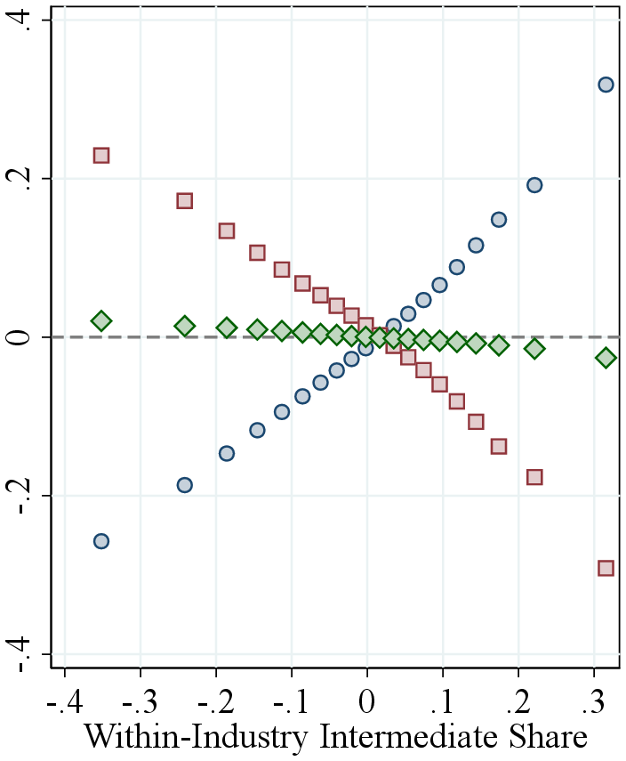
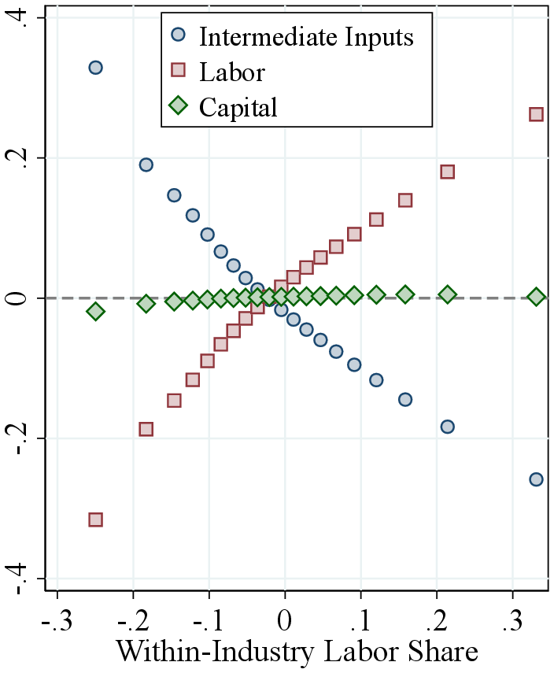
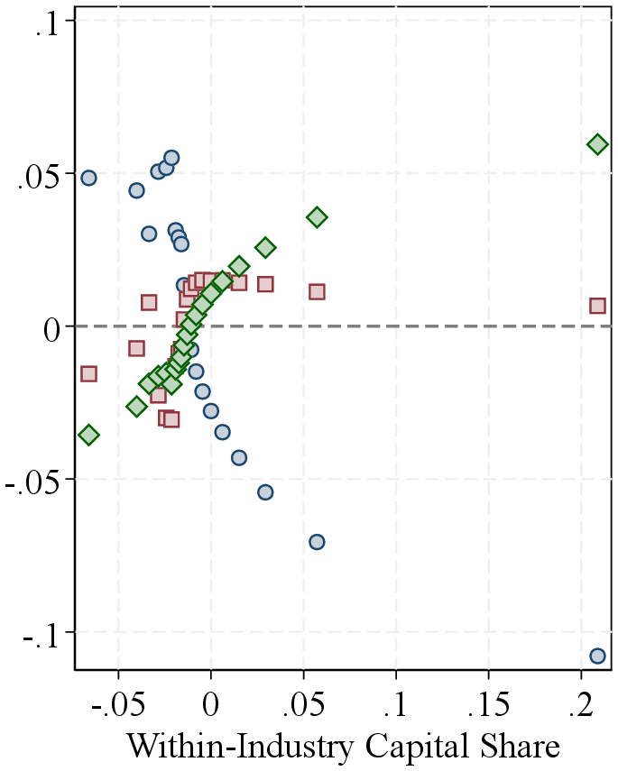
Notes: Figure 1 shows the relation between the input revenue shares defined as the ratio between the total cost of intermediate inputs, the total wage bill, and the total value of capital stock, divided by firm revenue, and the estimated output elasticity. Firms are ordered by the respective factor shares on the horizontal axis. The vertical axis shows averages of estimated output elasticities, demeaned within two-digit NAICS industry.
RTS heterogeneity. The within-industry RTS distribution has an average of 0.96 and a \(90^{th}\)-to-\(10^{th}\) percentile gap (P90–P10) of 0.08.12 This implies that the output response to a given proportional increase in inputs is about 8.3% larger for a firm at the \(90^{th}\) percentile of RTS than for a firm at the \(10^{th}\) percentile, holding TFP constant. These differences are quantitatively important when interpreted as deviations from constant returns to scale. In an efficient economy with Cobb-Douglas production, the elasticity of optimal firm output to firm TFP is \(\frac{1}{1-RTS}\). This elasticity is five times larger for a firm with RTS of 0.98 compared to one with RTS of 0.90.13 RTS dispersion is more pronounced above the median: the average within-industry P50–P10 is 0.03 compared to 0.05 for P90–P50 and 0.13 for P99–P50. The average 90th percentile for RTS across industries is 1.00; that is, most firms operate decreasing returns to scale technologies, yet some exhibit annual RTS above 1. 14
By construction, differences in RTS arise from heterogeneity in output elasticities. Intermediate inputs have the highest average output elasticity at 0.59, followed by labor at 0.33 and capital at 0.04 (Panel B of Table I).15 Labor and intermediate input elasticities also show larger within-industry variation than capital elasticities, with average P90-P10 gaps of 0.36 for intermediates and labor versus 0.08 for capital. Variance decompositions show that over 60% of the variation in each output elasticity is explained by within-industry differences, compared to only about 25% for RTS (Table A.11). This discrepancy reflects the negative correlation between output elasticities within industries (Table A.12).
Output elasticities and input shares. Following the identification argument in Section 2.2, we now present the key data features underlying our estimates. In models with competitive markets, output elasticities are equal to input revenue shares for flexible inputs. Our specification is more general, and the GNR method does not rely solely on the FOCs of profit-maximizing firms. Nevertheless, estimated output elasticities are positively correlated with the corresponding factor shares with similar levels. (Panels B and C of Table I).
Each panel of Figure 1 shows a bin scatter of (demeaned) output elasticities for all three inputs against a different input share. Across all inputs, elasticities are strongly positively correlated with their respective shares: intermediate input-intensive firms have higher intermediate input elasticities, labor-intensive firms have higher labor elasticities, and capital-intensive firms have higher capital elasticities. The relationship is strongest for intermediate inputs, consistent with our estimation approach, which treats intermediates as flexible and uses firms’ FOCs to estimate their elasticities. For labor and capital, our estimation does not rely on FOCs, yet we still observe strong correlations. These patterns support the identification intuition in Section 2.2: heterogeneity in output elasticities—and thus in RTS—largely reflects differences in input shares. They also suggest that high-RTS firms should have relatively low profit shares, which we confirm in the data by showing a negative correlation between the EBITDA-to-revenue ratio and RTS across firms (Figure A.7).
TFP dispersion. The average within-industry P90-P10 gap for TFP is 0.35, implying that a firm at the \(90^{th}\) percentile produces about 41.9% more output than a firm at the \(10^{th}\) percentile, conditional on inputs and output elasticities. This gap is substantially smaller than previous estimates even for narrow six-digit industries in Canada and the U.S., where typical P90-P10 TFP gaps are about twice as large (e.g., De Loecker and Syverson (2021) and Syverson (2011)). Two factors explain the difference: first, we estimate a flexible nonparametric production function that allows for differences in RTS; second, we use the wage bill rather than headcount or hours as the measure of labor input (see Fox and Smeets (2011)).
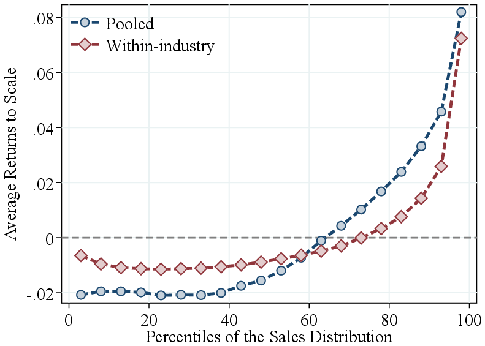
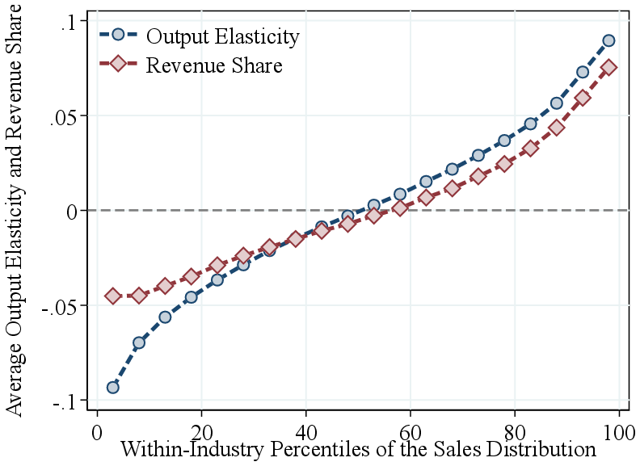
Notes: Figure 2a shows the average RTS across quantiles of the firm-revenue distributions, using both pooled and within-industry percentiles. RTS is demeaned by the pooled average (average RTS of 0.96) in the former and by industry averages in the latter. Figure 2b presents the estimated output elasticity and the observed revenue share of intermediate inputs, both demeaned by industry averages, across quantiles of the within-industry revenue distribution.
We next examine how RTS and TFP vary across the firm-size distribution. Section 4.2 presents our clustering results on ex-ante heterogeneity in firm technologies. Sections 4.3 and 4.4 show that our key result on RTS heterogeneity is robust to alternative estimation methods and samples. Finally, we relate our findings to broader debates on firms’ life-cycle growth and on wage and wealth inequality in Section 4.4.
4.1 Production Technologies over the Firm-Size Distribution
Returns to scale by firm revenue. We now turn to the systematic variation in RTS across the firm revenue distribution. To this end, we pool all firm-year estimates from 23 two-digit NAICS industries. Figure 2a shows bin scatter plots of (demeaned) average RTS by firm revenue using two ranking methods. First, we pool firm-year observations across all industries and rank them into revenue percentiles. We find that RTS is relatively flat across the bottom two-fifths of firms but increases sharply for larger firms in the economy. Average RTS rises by about 10 p.p. from the bottom to the top of the revenue distribution, primarily above the median.
Part of the variation in our pooled ranking may reflect differences across industries. For example, manufacturing firms, which tend to have higher RTS and larger revenues, are overrepresented at the top. Therefore, to isolate within-industry patterns, we calculate within-industry revenue percentile rankings. This approach reveals similar patterns: RTS is roughly constant below the median and increases steeply among larger firms within industries, with an 8 percentage point gap between the top 5% and the bottom half. Thus, most of the observed variation in RTS by firm size is driven by differences within industries, rather than across industries.
Output elasticities by firm revenue. Our analysis shows that the positive relationship between RTS and firm revenue is entirely driven by the intermediate input elasticity (Figure 2b). The intermediate input elasticity increases monotonically from -0.09 (relative to the industry average) for firms in the bottom 5% of the revenue distribution, to approximately zero around the median, and up to 0.09 for firms in the top 5%. This 9 p.p. gap in intermediate input elasticities between the top 5% and median firms fully explains the corresponding 8 p.p. gap in RTS over the same range. Figure 2b also shows that the intermediate input revenue share mirrors this pattern, with larger firms allocating a higher share of their revenue to intermediate inputs compared to smaller firms. This result is expected, as our estimation treats intermediate inputs as a flexible factor.16 Consistent with our findings, in a contemporaneous study Mertens and Schoefer (2025) use a setting with homothetic production functions and imperfect input markets to show that firms grow by shifting from labor to intermediate inputs. Finally, capital and labor elasticities decline slightly with firm revenue (Figure A.4), underscoring the importance of estimating gross output production functions: relying on value-added specifications may lead to misleading conclusions about firm-level technologies.
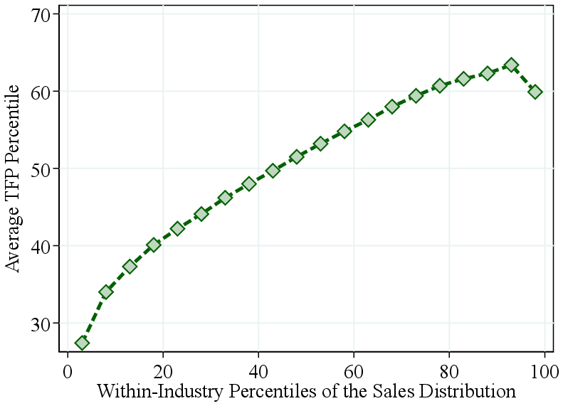
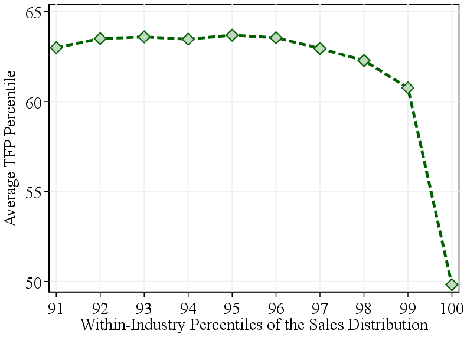
Notes: Figure 3a shows the average firm TFP rank within percentiles of the within-industry revenue distribution. The TFP rank is calculated within each industry. Figure 3b zooms in on the top 10% of the revenue distribution.
Total factor productivity by firm revenue. We next investigate whether larger firms also exhibit higher TFP. Since TFP levels are not comparable across industries, we focus on firms’ relative productivity ranks within industries. Figure 3a displays the average within-industry TFP percentile by within-industry revenue percentile.
We find that relative TFP increases with firm size up to the top decile of the revenue distribution, after which it flattens out. In fact, zooming in on the top 10%, we find that TFP falls off sharply for the largest firms (Figure 3b). In contrast, RTS increases even more steeply among the largest firms (Figure A.8). Thus, the largest firms tend to feature the highest RTS—not necessarily the highest TFP—as commonly assumed.
A few papers have studied the TFP-size relation (see Leung et al. (2008) or Baldwin et al. (2002)). Our results on the TFP-revenue gradient differ from these studies because we allow for heterogeneity in production technologies. To illustrate this, we reestimate a standard Cobb-Douglas production function imposing homogeneous RTS: \(Y_{jt}=e^{\nu _{jt}}K^{\alpha _{i}}_{jt}L^{\beta _{i}}_{jt}M^{\gamma _{i}}_{jt}\), where \(j\) and \(i\) denote firms and industries, respectively. As expected, under this restriction TFP increases monotonically with firm size (Figure A.10). This contrast highlights the importance of allowing for flexible production technologies in understanding the relationship between firm-level TFP, RTS, and size.
4.2 Ex-ante Technology Differences
Our benchmark GNR method estimates a flexible but common production function across firms within an industry, allowing output elasticities to vary with each firm’s input bundle. A central question is how much of the observed RTS dispersion reflects permanent differences in production technologies across firms versus non-homothetic variation along a common production function. For example, did a large, high-RTS firm also possess a more scalable technology when it first entered the industry as a smaller firm? We present three complementary pieces of evidence—ranging from transparent descriptive patterns to cluster-based production function estimates—all pointing to the same conclusion: the bulk of RTS heterogeneity reflects persistent technological differences across firms rather than non-homothetic variation along a common production function.
4.2.1 Persistence in Local Elasticities
Fixed effects regression. First, we regress RTS estimates from our baseline GNR method on firm size, firm age, time dummies, and firm fixed effects. If differences in RTS are largely permanent, firm fixed effects should absorb most of the variation. This is exactly what we find: of the total RTS variance of \(0.052^{2}\), firm fixed effects (with a variance of \(0.045^{2}\)) account for 75% of the variation when controlling for firm age and size. We find similarly strong persistence in U.S. manufacturing: RTS has a variance of \(0.058^{2}\) and fixed effects account for 65% of the total variation after controlling for other firm observables.
Autocovariance structure. Second, following the earnings dynamics literature (e.g., Abowd and Card (1989); Karahan and Ozkan (2013)), we use the autocovariance structure of RTS estimates to decompose firm-level RTS into a firm-specific fixed effect, a persistent AR(1) component, and a fully transitory component (see Appendix D for details). Consistent with the fixed effects results, only 10.5% of the total RTS variance is attributable to purely transitory shocks. Firm fixed effects and the highly persistent component (with an estimated persistence parameter of 0.94) account for 38.9% and 50.6% of the total variation, respectively.
4.2.2 Permanent Technological Differences: Clustering Analysis
These persistence results are consistent with two interpretations: firms may operate genuinely different production technologies, or they may share a common non-homothetic technology but maintain persistently different input bundles—for instance, due to financial constraints or other frictions. To distinguish between these interpretations, we turn to cluster-specific production function estimation. As detailed in Section 2.3, we implement an iterative clustering procedure that groups firms with similar technologies. Since cluster assignments are constant over each firm’s life cycle, this approach directly asks whether today’s large, high-RTS firms operated a more scalable technology even when they were small. The resulting RTS gap between the top and bottom deciles is 7.6 p.p.—larger than the baseline gap of 5.7 p.p.—reflecting the additional flexibility that cluster-specific production functions afford relative to the common-technology benchmark (Figure 4).
The clustering framework allows us to separate (i) within-cluster RTS variation driven by non-homotheticities along a common technology from (ii) between-cluster RTS variation, reflecting genuine technology differences. To isolate the technology component, we replace firm-level RTS with the corresponding cluster-average RTS. The P90-P10 RTS gap declines only modestly, from 7.6 p.p. to 6.3 p.p., implying that 83% of the observed dispersion reflects differences in production technologies rather than non-homotheticities along a common production function. Crucially, the resulting clusters are not simply partitions of the input space: firms in different clusters overlap substantially in their input usage, confirming that the between-cluster RTS differences reflect genuinely distinct technologies.
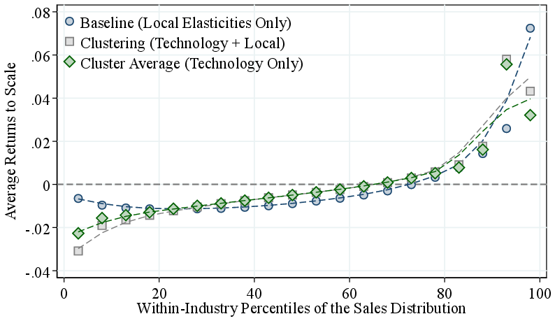
Notes: Baseline reports RTS estimated from the baseline GNR specification with a common production function within industries. Clustering reports RTS from the iterative clustering procedure that groups firms with similar technologies and estimates cluster-specific production functions using the GNR method. Cluster Average replaces firm-level RTS with the corresponding cluster-level mean RTS.
Our results are robust to alternative ways of grouping firms. Appendix B reports estimates using two simpler clustering schemes based on input shares and firm size. First, given the importance of input shares in identifying factor elasticities, we cluster firms within industries based on input shares and revenue percentiles over their lifecycle. Second, to capture persistent technology differences across firms with different growth trajectories, we group firms by their maximum revenue percentile attained over their life cycle. Across these alternative classifications, the RTS–size gradient and the implied RTS gaps remain similar to our baseline estimates, with most RTS dispersion reflecting persistent differences across clusters rather than variation along a common technology.
Taken together with the persistence evidence from the fixed-effects regressions and the autocovariance analysis, these results indicate that most RTS heterogeneity reflects ex-ante technological differences across firms rather than transitory variation in local elasticities. These findings are consistent with the endogenous entrepreneurship model with heterogeneous RTS in Section 5.
Accounting for Firm Size: Technology versus TFP Differences. A natural question is how much of the within-industry firm-size distribution reflects differences in technology (RTS) versus differences in productivity (TFP). Answering it requires addressing two conceptual challenges.
First, we need genuine between-firm technology heterogeneity, not merely local elasticity variation from firms operating at different points along a common non-homothetic production function. Our iterative-clustering approach directly addresses this issue by estimating separate production functions for groups of firms with similar technologies. To construct the counterfactual, we define a common technology within each industry as the coefficient-wise average of the cluster-level production functions.17 Under this common technology, firms share the same production function but differ in TFP; allowing cluster-specific production functions, by contrast, captures technology heterogeneity across firms.
A second complication is that TFP levels are not directly comparable across technologies. We therefore normalize TFP to have mean zero within each cluster, so that firm-level TFP captures productivity relative to the cluster average. Differences in mean TFP across clusters—the production function intercept—are attributed to technology heterogeneity.
We then construct counterfactual revenues for each firm-year observation by successively imposing common TFP, common technology, or both. A Shapley–Owen decomposition exercise shows that technology heterogeneity accounts for the majority of firm-size dispersion within industries: it explains 68%, 73%, and 71% of the p99–p50, p95–p50, and p90–p50 revenue gaps, respectively. The remaining dispersion is, by construction, explained by TFP differences. These patterns reinforce the paper’s central finding: the size advantage of large firms primarily reflects the technology they operate rather than higher productivity within a common technology.
4.3 Robustness of Results
Our benchmark method, GNR, relies on several identifying assumptions, such as firms being price takers in output markets. In this section, we relax some of these assumptions and apply alternative methods to show that our key result—larger firms operate technologies with higher RTS—is robust. If anything, these alternative specifications imply an even steeper RTS–size gradient, strengthening our main result (Figure 5).
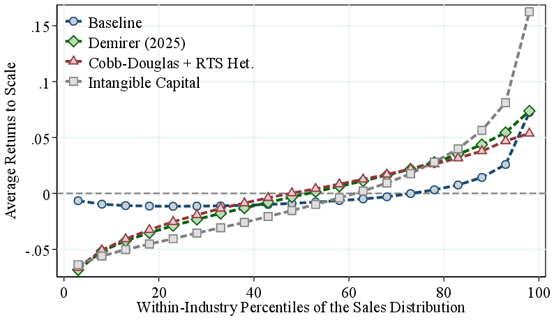
Notes: In the intangible capital specification, we include intangible assets, constructed using PIM, into the capital stock measure and apply the GNR method. In all specifications, we sort firms based on revenue within industry, and RTS is demeaned by industry averages.
4.3.1 Markups and Market Power
Our RTS estimates are based on revenue elasticities of the three inputs. A key concern in the literature (e.g., Bond et al. (2021)) is that identifying revenue-based or physical production functions typically requires either price and quantity data or strong parametric assumptions about demand and technology. In particular, using revenue data alone may lead to unknown biases in estimates of markups and output elasticities. However, recent evidence (e.g., De Ridder et al. (2022)) suggests that such biases are modest in practice and that relative variation in markups and elasticities is well identified even with revenue-based data. Consistent with this view, we show that relative variation in RTS—our main object of interest—is robust across multiple estimation methods. Specifically, we present three sets of theoretical and empirical arguments supporting our interpretation that the observed positive relationship between RTS and firm size primarily reflects technological differences, rather than variation in markups (e.g., De Loecker et al. (2020)), or monopsony markdowns (e.g., De Loecker et al. (2016) and Burstein et al. (2024)).
Role of markups. First, if larger firms charge higher markups or markdowns—as implied by models with oligopolistic competition (e.g., Atkeson and Burstein (2008)) or monopolistic competition under log-concave demand systems (e.g., Edmond et al. (2023))—then physical RTS would increase even more strongly with firm size than revenue-based RTS. This follows because the physical output elasticity equals the revenue elasticity multiplied by the firm’s markup. We directly estimate firm-level markups following De Loecker and Warzynski (2012) and find that markups increase with firm revenue in our data (Figure A.3)—consistent with De Loecker et al. (2020)— indicating that the size gradient is larger for physical RTS than for revenue-based RTS.
Controlling for market power. Second, while our baseline method permits markdowns in capital and labor markets, it does not account for markups in output markets or markdowns on intermediate inputs. We then extend the GNR approach to explicitly control for both types of market power using firms’ output market shares as proxies for unobserved price elasticities (following De Loecker et al. (2020) and De Loecker et al. (2016)). Relaxing the perfect competition assumption, we allow firms to face downward-sloping demand and adjust the FOC for intermediate inputs accordingly.18 If markups (or markdowns) are a significant determinant of input expenditure shares, we should find that our estimates of the intermediate input elasticity are sensitive to the inclusion of these controls. Controlling for market share barely changes the size gradient of the intermediate input elasticity (Figure A.12), the main driver of RTS differences along the firm-size distribution.
Demirer method. Third, we apply Demirer (2025)’s method, which explicitly allows for heterogenous markups across firms. Yet, it requires several stronger assumptions on production and input choices. Specifically, we impose the following restrictions on the general firm problem (Section 2.1): (i) Firms \(j\) in industry \(\mathfrak{i}\) share a common, weakly homothetic separable production function \(F^{\mathfrak{i}}(K_{jt},h^{\mathfrak{i}}(L_{jt},\omega ^{M}_{jt}M_{jt}))\) where \(h^{\mathfrak{i}}\) is homogeneous in both inputs and \(\omega ^{M}_{jt}\) is intermediate-augmenting productivity. (ii) Both \(M_{jt}\) and \(L_{jt}\) are flexible inputs, optimally chosen, and firms are price takers in both input markets. (iii) Firms have price setting power in output markets via a demand function \(P_{jt}=P^{\mathfrak{i}}_{t}(Y_{jt})\). See Demirer (2025) for additional technical assumptions.19
Under these different assumptions, the estimated RTS-size gradient remains robust and, if anything, becomes even steeper: RTS increases by about 10 percentage points from the bottom half to the top 5% of the firm-size distribution (Figure 5). These results are consistent with the view that physical RTS increases more strongly with firm size than revenue-based RTS, as expected if markups increase with firm revenue—a relationship we confirm again using the Demirer methodology (Figure A.3).
Factor-augmenting productivity shocks. Another potential concern is that larger firms may have higher intermediate input elasticities simply because they use intermediate inputs more efficiently, reflecting factor-specific productivity shocks. Since our results remain robust under Demirer (2025)’s method, which accommodates factor-augmenting productivity shocks, this concern is likewise alleviated.
4.3.2 Cobb-Douglas with RTS Heterogeneity.
Another potential concern is that our results may be sensitive to the flexible functional form assumed in the GNR method. To address this, we reestimate the production function by imposing homogeneous relative factor elasticities while still allowing for RTS differences, i.e., \(F_{jt}(K_{jt},L_{jt},M_{jt})=\left (K^{\varepsilon _{K}}_{jt}L^{\varepsilon _{L}}_{jt}M^{\varepsilon _{M}}_{jt}\right)^{\eta _{jt}}\). Consistent with our baseline findings, the Cobb-Douglas series in Figure 5 shows that RTS increases with firm size by about 10 p.p., with a steeper rise in the bottom half of the revenue distribution and a more moderate increase among the largest firms relative to our baseline.
4.3.3 Intangible capital.
We also analyze the importance of including intangibles in our measure of firms’ capital stock and reestimate their production functions using Canadian data. In theory, including intangibles affects measured productivity, the output elasticity of capital, and therefore RTS. In particular, if larger firms invest disproportionally more in intangible capital, omitting intangibles would understate their capital elasticity (and thus RTS) and overstate their TFP. Consistent with this intuition, we find that the positive relationship between firm size and RTS becomes even stronger when intangible capital is included. As shown in Figure 5, the P95–P50 RTS gap increases from \(0.08\) in the baseline to \(0.20\) when intangible capital is incorporated.
4.3.4 Ranking firms by employment or value added.
Appendix Figure A.5 presents the results when ranking firms, within industry, by employment or value added rather than by revenue. While the patterns for RTS are similar, the output elasticities display distinct variations: firms with high employment or high value added exhibit higher labor elasticities, whereas the intermediate input elasticity shows only a small increase among the largest firms. This pattern arises mechanically from the ranking criterion: firms with high employment or value added are, by construction, more labor-intensive. Therefore, we prefer to rank firms by revenue—a factor-neutral approach—in our primary analysis.
4.4 International Evidence
Our results are also robust across multiple samples and countries. We find similar patterns when analyzing U.S. manufacturing plants and firms in eleven European countries.
U.S. manufacturing. Our results are not unique to the Canadian economy but also hold for the U.S. manufacturing sector. Figure 6a shows the RTS–revenue relationship at the plant level, relative to the four-digit NAICS industry average. The pattern is U-shaped, with a notable steep increase at the top: RTS rises by about 9 p.p. from the 50th percentile to the top 1% of the revenue distribution. For comparison, we include a corresponding series for Canadian manufacturing in the same figure. Both sectors display similar U-shaped patterns, but the increase in RTS among the largest plants is more pronounced in the U.S., consistent with the longer right tail of the U.S. manufacturing size distribution (Leung et al., 2008).
Remarkably, as in Canada, the increase in RTS is primarily driven by a rise in the output elasticity of intermediate inputs, which increases from about \(0.35\) at the bottom of the size distribution to around \(0.55\) for the largest U.S. plants (Figure A.4b). Furthermore, labor elasticities decline steadily with firm revenue, while capital elasticities decline up to the 90th percentile and then rise slightly among the very largest plants (Figure A.4). Revenue shares of labor, capital, and intermediate inputs across the revenue distribution also exhibit remarkably similar patterns between U.S. and Canadian manufacturing, and more broadly among all Canadian corporations (Figure A.6).
Our U.S. manufacturing production function estimates are at the plant level, whereas the Canadian data are measured at the firm level, which aggregates over multiple plants. In the Canadian data, we find that RTS increases significantly with the number of plants per firm (Figure A.9). However, controlling for the number of plants only slightly attenuates the RTS–revenue gradient: regressing demeaned RTS on log firm revenue yields a coefficient of \(0.012\), which drops modestly to \(0.010\) when controlling for plant count. Together with the U.S. manufacturing evidence, these results suggest that variation in RTS by firm revenue is not primarily driven by differences in the number of plants, but rather by systematic differences in production technologies across individual plants.
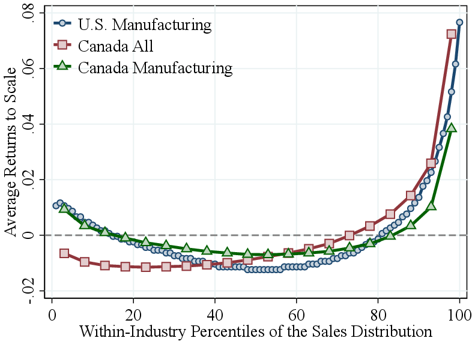
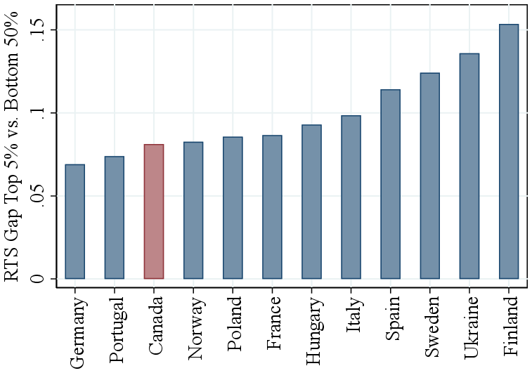
Notes: Figure 6a plots average RTS (demeaned by industry averages) against within-industry revenue percentiles for Canadian and U.S. manufacturing, as well as for the baseline economy-wide Canadian sample. Canadian results are shown within 5% quantiles of the revenue distribution. Figure 6b compares the within-industry RTS gap between the top 5% and bottom 50% of firms across 11 countries using Orbis data, including Canada for reference.
International evidence. Our results extend to several other countries using firm-level data from the Orbis database. Figure 6b shows estimates based on our baseline GNR method, applied within 2-digit NAICS industries across countries. We summarize the findings by plotting the average RTS difference between the top 5% and bottom 50% of the within-country-industry revenue distribution. The results are remarkably consistent across countries, with RTS differences ranging from about 7 p.p. in Germany to 15 p.p in Finland. Canada falls near the middle of this distribution, with similar patterns observed for other large European economies such as France and Italy. Consistent with our main results, we find that the intermediate input elasticity also increases strongly with firm size across countries (Figure A.1). Last, we apply the Demirer methodology to the Orbis data and find similar results (Figure A.2).
Implications for Firm Dynamics and Inequality. We now revisit several well-known empirical patterns in firm heterogeneity that have traditionally been attributed to TFP differences. For example, the literature has argued that firms with higher TFP grow faster (e.g., Sterk et al. (2021)), pay higher wages (e.g., Kline (2024)), and are disproportionately owned by wealthier households (e.g., Quadrini (2000); Cagetti and De Nardi (2006)). In this section, we argue that RTS differences are at least as important in explaining these empirical patterns.
4.4.1 Firm Dynamics
Heterogeneity in RTS has significant implications not only for the firm size distribution but also for firms’ growth trajectories over the life cycle. Firms with higher RTS are expected to grow faster to reach their larger optimal sizes, compared to firms with similar TFP but lower RTS. To analyze these life-cycle patterns, we construct a balanced panel of Canadian firms from our baseline estimates and group firms by their initial production function characteristics. Specifically, we focus on firms born between 2002 and 2005 that are observed for 12 consecutive years. We group firms based on their initial RTS and initial TFP, demeaned at the industry level. We then track their average log revenue, again demeaned within industries, over their life cycle (Figure 7).
(a) RTS
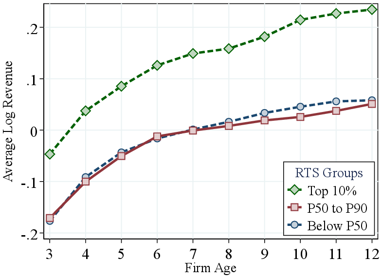
(b) TFP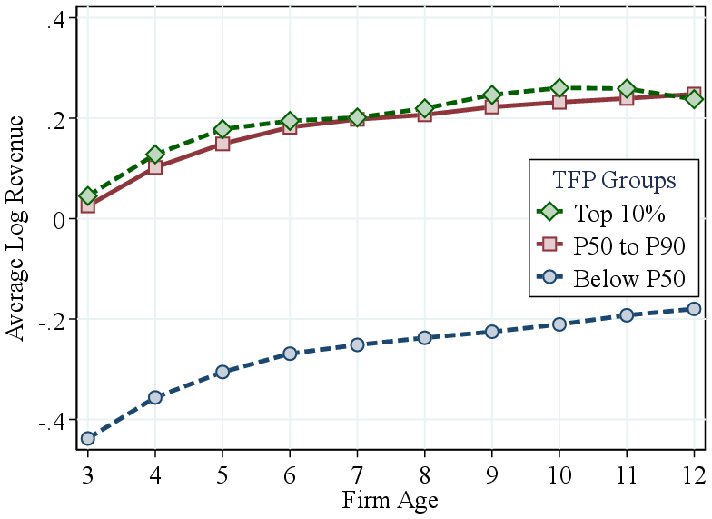
Figure: Figure 7 – Life Cycle of Firms Starting with Different RTS and TFP
Notes: Figure 7 compares the life-cycle profile of revenue between firms with different initial RTS (Figure 8a) and TFP (Figure 8b). They are constructed using a balanced panel of firms which (i) are born between 2002 and 2005 and (ii) survive for at least 12 years. We demean firms’ initial RTS at the two-digit NAICS industry level. We bin firms into three groups based on their initial demeaned RTS in the left panel and three groups based on initial within-industry TFP percentiles in the right panel. Firm log revenue is also demeaned at the two-digit NAICS industry level.
Firms with higher initial RTS and TFP start with higher revenues relative to their industry peers. More importantly, firms with higher initial RTS (Panel A) exhibit significantly faster growth: firms in the top 10% of the initial RTS distribution grow about 30 log points over 10 years, whereas firms in the bottom 90% grow by only about 20 log points. This evidence supports our interpretation that high-RTS firms operate more scalable technologies, enabling substantially greater life-cycle growth. We also rank firms by their average growth rates over 12 years and find that the top 1% fastest-growing firms (“gazelles”) exhibit an average RTS of 0.98 compared to 0.95 among those below the 90th percentile. Similarly, Guntin and Kochen (2025) recently show that a firm dynamics model with ex-ante heterogeneity in production functions is required to explain empirical life cycle trajectories of the largest firms.
In contrast, Panel B shows that firms entering with high TFP, while initially larger, do not grow faster than other firms in their industry. Indeed, higher initial TFP is associated with slightly lower subsequent growth, which can be explained by TFP being a mean-reverting process. These finding suggest that highly productive firms might have low RTS, which constrains their growth (Hurst and Pugsley (2011)).
While these results focus on surviving firms, we also examine the effects of RTS and TFP heterogeneity on firm exit. We estimate probit regressions of firm exit on TFP percentile and RTS (Table A.15). Across specifications, higher RTS is associated with a lower probability of firm exit. The effect of TFP on firm exit is smaller, and varies in sign across specifications. We conclude that, from an ex ante perspective, RTS heterogeneity better predicts differences in firm growth and survival over the life cycle than TFP heterogeneity.
Finally, we investigate whether firms with varying RTS respond differently to aggregate shocks. We use two types of shocks: changes in industry-level TFP, and the 2007-2008 global financial crisis. We estimate regressions of firm revenue growth on RTS, the aggregate shock, and their interaction (Table A.16). The results show that firms with higher RTS respond more strongly to aggregate shocks, consistent with greater scalability (see also Smirnyagin (2023), Clymo and Rozsypal (2025), and Argente et al. (2024)).
4.4.2 Role of RTS Heterogeneity in Wealth and Wage Inequality
We conclude this section by examining how firm-level RTS relates to the wealth of firm owners and the wages of workers. First, we analyze how production function parameters vary with the equity wealth of business owners. A key advantage of our dataset is that we can link firms to their ultimate individual owners using administrative records from the Shareholder Information in Corporate Tax Files. We calculate each individual’s equity wealth by aggregating the value of the firms they own, weighted by ownership shares. For each owner, we then compute an equity-value-weighted average RTS and TFP percentile across the firms they own. Figure 8a shows that wealthier individuals tend to own firms with higher RTS. That is, owners at the top of the wealth distribution are more likely to own firms with more scalable production technologies. In addition, TFP is also increasing in owner wealth, but in a concave manner, particularly at the top of the distribution.
It is well established that large firms tend to pay higher wages than smaller firms for similar workers (Brown and Medoff (1989)). Given our results, a natural question is whether this firm size-wage premium is driven by higher TFP or greater scalability (RTS) among large firms. To disentangle these factors, we rank firms by their average wage and compute the average RTS and TFP across wage deciles. Figure 8b shows that higher-paying firms tend to have significantly higher RTS, while the relationship between wages and TFP is weaker and less systematic. These findings suggest that RTS heterogeneity is an important driver of the firm size-wage premium.
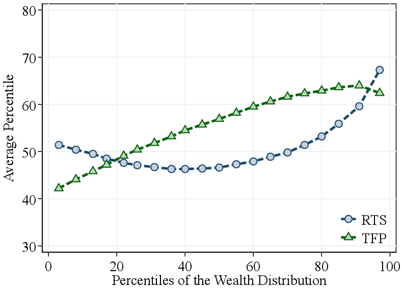
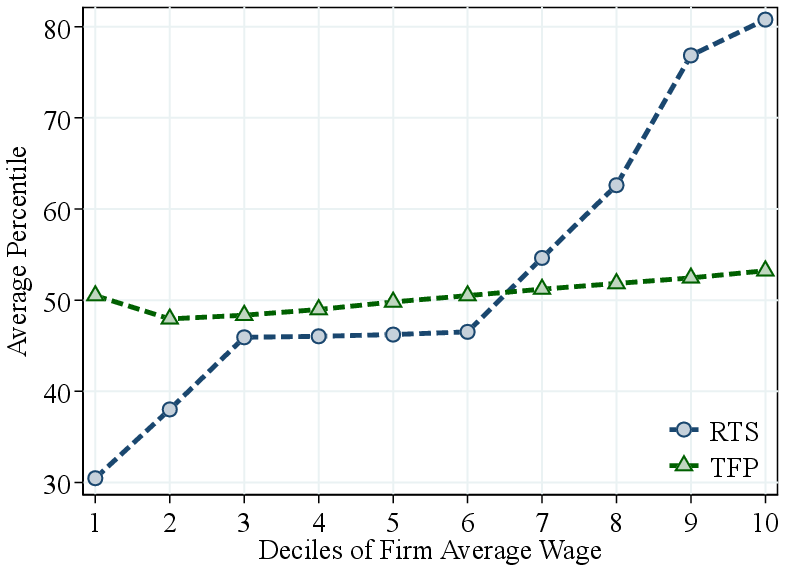
Notes: Figure 8a shows the average percentiles of RTS and TFP by percentiles of owners’ equity wealth. Figure 8b shows the average percentiles of RTS and TFP by deciles of firms’ average wage. Average wage is demeaned at the industry level. RTS and TFP percentiles are calculated within industry using our baseline (GNR) method.
5 Misallocation with RTS Heterogeneity
So far, we have documented substantial heterogeneity in RTS across firms and examined its implications for the firm size distribution. In this section, we study the theoretical and quantitative implications of this heterogeneity for a fundamental question in macroeconomics: the efficiency costs of financial frictions.
Our empirical results suggest that RTS heterogeneity is largely ex ante and persistent rather than driven by non-homotheticities. At the same time, our empirical approach measures RTS without tying it to a specific mechanism. Together, these findings motivate a model in which firms differ in an exogenous, highly persistent RTS type.
We employ an off-the-shelf quantitative model of entrepreneurship in the tradition of Quadrini (2000) and Cagetti and De Nardi (2006). Firms differ in both RTS (\(\eta\)) and TFP (\(z\)) in the (\(\eta,z\))-economy, while the benchmark \(z\)-economy features heterogeneity only in \(z\). By treating RTS symmetrically to TFP as an exogenous firm characteristic, comparing the two economies isolates how accounting for RTS heterogeneity changes the quantitative implications of financial frictions.
To exhibit the mechanism transparently, our baseline model is deliberately parsimonious. We show below that the main conclusions are robust in richer environments that more closely mirror the empirical setting. To build intuition, we first derive an analytical result in a static endowment economy and then quantify the mechanism in a dynamic setting.
5.1 Analytical Result in an Endowment Economy
We consider an endowment economy with aggregate input supply normalized to \(X=1\). A continuum of firms \(i\in [0,1]\), produces perfectly substitutable goods. A fraction \(\chi \in (0,1)\) of these firms face an input price wedge \(\tau \geq 0\), which distorts their input choices and constrains production. Each constrained firm is characterized by a pair of parameters \((\eta,z)\), where \(\eta \in (0,1)\) governs firm-level RTS and \(z\) is the firm’s TFP. Consistent with our empirical interpretation, we treat \(\eta\) as a given firm characteristic and interpret it as a summary statistic for scalability. The output of a constrained firm is given by \(y=f(x;z,\eta)=z\cdot x^{\eta}\). The remaining fraction of firms \(1-\chi\) is unconstrained and has constant returns to scale (\(\eta =1\)).20 The following proposition characterizes misallocation in terms of the output share and RTS of constrained firms:
Proposition 1. Consider an interior equilibrium where the output share of constrained firms is below one. Then, up to a second order approximation around the first best (\(\tau =0\)), the percent output loss associated with \(\tau\) is given by
\[\begin{align*} \Delta \ln Y \left (\tau \right) = \underbrace{\frac{\tau ^2}{2}}_\text{size of friction} \cdot \underbrace{\int _0^\chi w_i \cdot d i}_{\text{output share of constrained firms}} \cdot \underbrace{\int _0^\chi \frac{w_i}{\int _0^\chi w_j dj} \cdot \frac{\eta _i}{1-\eta _i} \cdot d i}_\text{avg. $\frac{RTS}{1-RTS}$ of constrained firms} \end{align*}\]
where \(w_i \equiv \frac{y_i^\star}{Y^\star}\) denotes the relative output of firm \(i\) in the first-best equilibrium.
Proof. See Appendix E.1 for the proof of the proposition. □
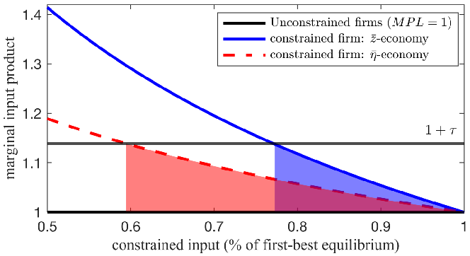
Notes: The figure provides a qualitative illustration of efficiency losses from input wedges for a representative constrained firm. In the \(\bar{{z}}\)-economy, the firm has high TFP (\(z=\bar{{z}},\eta =\eta _{0})\); in the \(\bar{{\eta}}\)-economy, the firm has high returns to scale (\(z=z_{0},\eta =\bar{\eta}\)), with \(0<z_{0}<\bar{z}\) and \(0<\eta _{0}<\bar{\eta}<1\). The shaded areas capture the implied output loss under each scenario.
The proposition shows that misallocation is proportional to the size of the friction and the output share of constrained firms. More importantly, it is increasing and convex in the (weighted-average) RTS of constrained firms (see also Atkeson et al. (1996) and Guner et al. (2008) for related points). Consequently, for a given wedge, misallocation is more severe when constrained firms have higher RTS. Furthermore, as a result of the convexity of misallocation in RTS, greater dispersion in RTS among constrained firms also leads to more severe misallocation.
Intuitively, a given input price wedge induces a larger quantity adjustment when RTS is high, as marginal products decline more slowly. This causes constrained firms to reduce their inputs more, leading to greater misallocation. In contrast, firm TFP affects misallocation only indirectly through its influence on the output share of constrained firms. We illustrate this in Figure 9, which compares the marginal input product of firms that would be “large” in the first-best allocation and contribute most to misallocation. The solid blue line represents the conventional setting where large firms have high TFP (\(\bar{{z}}\)), while the dashed red line represents an economy where large firms have high RTS (\(\bar{\eta}\)). For a given wedge \(\tau\), misallocation—represented by the area under the curve—is larger in the \(\bar{\eta}\)-economy.
5.2 Quantitative Dynamic Model
We now turn to the full dynamic model of entrepreneurship in the tradition of Quadrini (2000) and Cagetti and De Nardi (2006). Relative to the static environment, this model captures additional margins—capital accumulation, selection into entrepreneurship, and the endogenous composition of constrained firms—that shape the interaction between financial frictions and scalability. We quantify efficiency losses from financial frictions in the (\(\eta,z\))-economy and compare them to those in an otherwise identical \(z\)-economy.
5.2.1 Model Setup
Time is discrete and there is a unit continuum of agents who derive log utility from consumption. They discount the future at rate \(\tilde{{\beta}}\) and face a constant death probability \(p\in [0,1)\). Thus, their effective discount factor is \(\beta =(1-p)\cdot \tilde{{\beta}}\), and they maximize \(\mathbb{E}\left [\sum _{t\geq 0}\beta ^{t}\ln (c_{t})\right]\). Agents choose between employment and entrepreneurship, \(o\in \left \{W,E\right \}\). A worker earns labor income \(w\cdot h\), where \(w\) denotes the wage rate and \(h\) efficiency units of labor supply, which follow a first-order Markov process. Entrepreneurs are price takers in input and output markets, hire labor \(\ell\) and capital \(k\) at rental rates \(w\) and \(R\) to produce output \(z\cdot f(k,\ell)^{\eta}\), where \(f(\cdot)\) is a constant-returns-to-scale production function. The pair \((z,\eta)\) denotes entrepreneurial productivity \(z\) and project scalability \(\eta\), both treated as firm characteristics and assumed to follow a joint first-order Markov process. Consistent with our empirical findings, we model RTS as a persistent firm characteristic and abstract from non-homotheticities, which play a secondary role.
Asset markets are incomplete. Agents can invest their wealth \(a\geq 0\) in an annuity that pays an interest rate \(r\). Upon death, agents are replaced by an equal number of newborns who start with zero wealth. We parameterize financial frictions by \(\lambda \in [0,1]\), assuming that a fraction \(\lambda\) of total input expenditures must be financed with the entrepreneur’s own wealth. When this constraint binds, it generates a wedge between marginal products and input prices. As a result, static profit maximization yields a net profit of
\[\begin{align*} \pi (a,z,\eta) & =\max _{k\geq 0,\ell \geq 0}z\cdot f(k,\ell)^{\eta}-w\cdot \ell -R\cdot k\\ & \text{s.t.}w\cdot \ell +R\cdot k\leq \frac{a}{\lambda}, \end{align*}\]
implying input choices \(k(a,z,\eta),\ell (a,z,\eta)\) and output \(y(a,z,\eta)\).21 Thus, the agent’s dynamic problem can be written in recursive form as
\[\begin{align*} V(a,h,z,\eta) & =\max _{a'\geq 0,c\geq 0,o\in \left \{W,E\right \}}{u(c)}+\beta \cdot \mathbb{E}[V(a',h',z',\eta ')]\\ & \text{s.t}.\quad c+a'=\mathbb{{I}}_{o=W}\cdot w\cdot h+\mathbb{{I}}_{o=E}\cdot \pi (a,z,\eta)+(1+r)\cdot a. \end{align*}\]
We assume a competitive financial intermediary that invests in physical capital, subject to depreciation rate \(\delta\), and issues the annuities.
Equilibrium. We relegate the standard definition of equilibrium to Appendix E.2.
5.2.2 Calibration
We calibrate both the \((\eta,z)\)- and the \(z\)-economy to match the same set of observable moments of the firm size distribution and entrepreneurship dynamics. This isolates the role of RTS heterogeneity while holding fixed all other aspects of the environment. We follow a standard calibration strategy. First, we briefly discuss fixed common parameters. We set the death probability to \(\frac{1}{80}\), corresponding to an expected life expectancy of 80 years.22 We use a Cobb-Douglas production function \((f)\) with capital share \(\alpha =0.4\) and depreciation rate \(\delta =0.05\). Labor efficiency units \(h\) follow a log-normal AR(1) process with autocorrelation of \(0.9\) and cross-sectional standard deviation of \(1.3\), with mean normalized to \(\mu _{h}=-\frac{\sigma ^{2}_{h}}{2}\). We estimate this process directly from the data on individual post-tax earnings. We calibrate both economies at \(\lambda =0.3\), implying that 30% of input expenditures must be financed with the owner’s wealth, and then vary \(\lambda\) in counterfactuals.23
\((z)\)-Economy: We jointly calibrate five parameters \((\beta,\eta,\sigma _{z},\rho _{z},\xi _{z})\) to match six empirical moments as summarized in the middle column of Table II. The effective discount factor \(\beta\) primarily influences the aggregate capital-output ratio. The (common) RTS parameter \(\eta\) is closely tied to the fraction of the population engaged in entrepreneurship, as it governs the share of income accruing to entrepreneurs. Productivity \(z\) follows a log-normal AR(1) process with normalized mean \(\mu _{z}=-\frac{\sigma ^{2}_{z}}{2}\). Its persistence \((\rho _{z})\) shapes entry into and exit from entrepreneurship, while its cross-sectional dispersion, \(\sigma _{z}\), is central for matching the firm size distribution. To better capture the right tail, we model the top 1% of the \(z\)-distribution with a Pareto tail, where \(\xi _{z}\) governs tail thickness. Overall, the model matches the targeted moments closely.
| Data | Model | |||
| \(z\)-economy | \((\eta,z)\)-economy | |||
| A. Targeted moments | ||||
| Fraction entrepreneurs | 0.117 | 0.117 | 0.117 | |
| Transition rate W\(\rightarrow\)E | 0.021 | 0.021 | 0.021 | |
| Top 10% revenue share | 0.799 | 0.804 | 0.796 | |
| Top 1% revenue share | 0.522 | 0.515 | 0.524 | |
| Top 0.1% revenue share | 0.282 | 0.284 | 0.283 | |
| RTS: Top 5% vs bottom 50% (by revenue) | 0.083 | — | 0.083 | |
| Capital-output ratio | 2.970 | 2.970 | 2.971 | |
| B. Internally calibrated parameters | ||||
| Mean RTS | \(\mu _{\eta}\) | 0.683 | 0.782 | |
| Standard deviation RTS | \(\sigma _{\eta}\) | — | 0.054 | |
| Standard deviation log TFP | \(\sigma _{z}\) | 0.910 | 0.635 | |
| Persistence TFP | \(\rho _{z}\) | 0.970 | 0.954 | |
| Pareto tail TFP | \(\xi _{z}\) | 2.880 | — | |
| Correlation \((z,\eta)\) | \(\rho _{z,\eta}\) | — | -0.253 | |
| Discount factor | \(\beta\) | 0.902 | 0.890 | |
Notes: Steady-state calibration of the \((\eta,z)\) - and \(z\) -economy (both at \(\lambda =0.3\)). * not targeted. Data moments are derived from Canadian data, and the RTS gap corresponds to our baseline estimation.
\((\eta,z)\)-Economy: We extend the calibration of the \(z\)-economy by additionally disciplining heterogeneity in \(\eta\) to match the observed dispersion of RTS along the revenue distribution (rightmost column of Table II). Specifically, we model \(\eta\) as a truncated normal AR(1) process on the interval \((0,1)\) with parameters \((\mu _{\eta},\sigma _{\eta},\rho _{\eta})\). We set \(\rho _{\eta}=0.98\), matching the high persistence of RTS documented in the empirical analysis. The mean \(\mu _{\eta}\) helps determine the fraction of entrepreneurs, while the cross-sectional dispersion \(\sigma _{\eta}\) is closely linked to the difference in average RTS between the top 5% and the bottom 50% of firms ranked by revenue.24 We allow \(z\) and \(\eta\) to be correlated, but rather than imposing the empirically estimated joint distribution of \((\eta,z)\) directly, we calibrate the TFP process residually. This serves two purposes. First, it ensures that the \((\eta,z)\)-economy matches the same firm size distribution as the \(z\)-economy. Second, when firms operate production functions with different RTS, relative TFP levels are not directly comparable across firms, so the empirical joint distribution of \((\eta,z)\) cannot be taken at face value.25 Formally, we specify log TFP as \(\ln z=\sqrt{(1-\rho ^{2}_{z,\eta}}\tilde{{z}}+\rho _{z,\eta}\cdot \frac{\sigma _{z}}{\sigma _{\eta}}\cdot (\eta -\mu _{\eta})\), where \(\tilde{{z}}\) follows an independent normal AR(1) process with parameters \((\sigma _{z},\rho _{z},\mu _{z}=-\frac{\sigma ^{2}_{z}}{2})\). Under this parameterization, \(\sigma _{z}\) denotes the cross-sectional standard deviation of log TFP. Intuitively, both \(\rho _{z,\eta}\) and \(\sigma _{z}\) influence moments of the firm size distribution: when empirical RTS dispersion is small, the model requires greater residual TFP dispersion \(\sigma _{z}\) to match observed revenue concentration, while larger RTS dispersion implies a more negative correlation parameter \(\rho _{z,\eta}\).
In total, we calibrate six parameters to match seven empirical moments. This model version also matches the targeted moments closely and does not require a Pareto tail in \(z\) to replicate the right tail of the firm-size distribution; observed heterogeneity in RTS, combined with log-normal \(z\), is sufficient.
5.2.3 Quantitative Findings
The two model economies are observationally equivalent in terms of the fraction of entrepreneurs, the persistence of entrepreneurship, the firm-size distribution, and the capital-output ratio. We evaluate the efficiency losses associated with the same financial friction in both economies. Figure 10 compares output losses as the financial friction parameter \(\lambda\) increases from the unconstrained case (\(\lambda =0\)) to \(\lambda =1\) across stationary equilibria. For \(\lambda =0.3\), corresponding to entrepreneurs financing 30 cents of each dollar of input expenditure with own wealth, the \((\eta,z)\)-economy—disciplined by empirical heterogeneity in both TFP and RTS—exhibits an output loss of 18.3 log points relative to the frictionless benchmark. By contrast, the conventional \(z\)-economy with homogeneous RTS incurs a significantly smaller loss of 7.4 log points. Thus, allowing for empirically measured RTS heterogeneity—while holding fixed the same observables and calibration targets—amplifies output losses from financial frictions by 147%.
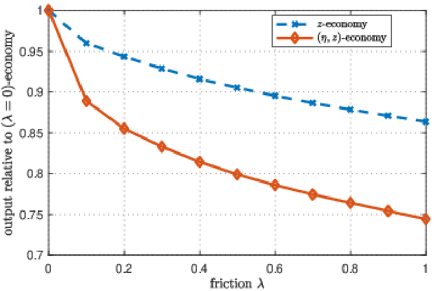
Notes: The figure plots output as a function of the financial friction \(\lambda\), for both the \((z)\)- and the \((\eta,z)\)-economy. Output in both cases is normalized to one at \(\lambda =0\).
To understand this finding and connect it to the analytical mechanism in Section 5.1, we decompose the total log output loss into three terms: (i) static misallocation of production factors, holding fixed occupational choice; (ii) misallocation of talent across occupations; and (iii) under-accumulation of capital. Panel A of Table III shows that static misallocation of production factors across firms contributes 10.6 log points in the \((\eta,z)\)-economy—more than half of the total GDP loss and twice as much as in the conventional \(z\)-economy. This is precisely the channel highlighted in the analytical discussion: consistent with Proposition 1, a given input wedge distorts factor demand more for high-\(\eta\) firms. The dynamic setting further magnifies this effect through selection and accumulation: Consider two hypothetical superstar entrepreneurs that are initially poor and face the same financial friction. The one distinguished by high productivity (high \(z\)) can operate profitably even at small scale and therefore outgrows the constraint relatively quickly. In contrast, the one distinguished by high scalability (high \(\eta\)) is less profitable at small scale and consequently struggles to expand when constrained, leading to larger and more persistent misallocation.
The majority of the remaining output loss is due to the under-accumulation of capital. Misallocation of talent across occupations also contributes slightly more in the \((\eta,z)\)-economy, but remains relatively small in both economies. The \(\lambda\)-friction primarily misallocates production factors across firms rather than distorting occupational choice in this environment. We chose a simple and transparent calibration strategy with a small number of parameters, deliberately abstracting from additional elements such as fixed costs of entry and exit that could magnify the importance of the occupational choice channel.
| A. Decomposition of output losses | \(z\)-economy | \((\eta,z)\)-economy |
| Total log GDP loss | 7.4 | 18.3 |
| … due to misallocation of production factors | 5.0 | 10.6 |
| … due to misallocation of talent | 0.5 | 0.6 |
| … due to K accumulation | 1.9 | 7.1 |
| B. Alternative comparisons, total log GDP loss | ||
|
7.4 | 26.9 |
|
7.4 | 21.6 |
Notes: Panel A additively decomposes the total (steady-state) log GDP loss going from \(\lambda =0\) to \(\lambda =0.3\) into (i) misallocation of production factors (starting from the \(\lambda =0.3\) steady state, fixing \(K,L\), and occupational status, allowing for efficient reallocation of \(K,L\) across firms); (ii) misallocation of talent (in addition allowing for efficient change of occupational status), and (iii) dynamic under accumulation of capital. Panel B reports the total GDP loss from the financial friction \(\lambda\), in log points, in alternative scenarios. We raise \(\lambda\) from \(0\) to \(0.3\) in the \(z\) -economy, and from \(0\) to \(x\) in the \((\eta,z)\) -economy, where \(x\) is chosen to match the debt ratio (row 1), respectively marginal input product dispersion (row 2), of the \(z\) -economy with \(\lambda =0.3\).
In the benchmark scenario, we increase \(\lambda\) from \(0\) to \(0.3\) in both economies. Panel B of Table III shows that the results are even stronger when we instead equate alternative observable moments, such as the aggregate debt-to-capital ratio or the dispersion of log marginal input products. For these exercises, we continue to raise \(\lambda\) from \(0\) to \(0.3\) in the \(z\)-economy, which generates an aggregate debt-to-capital ratio of \(0.708\) and a cross-sectional standard deviation of log marginal products of \(0.144\). We then adjust \(\lambda\) in the \((\eta,z)\)-economy—raising it from 0 to 0.797 to replicate the debt ratio, or to 0.454 to match the marginal product dispersion. In these cases, the \((\eta,z)\)-economy generates output losses that are \(192-264\%\) larger than those in the \(z\)-economy.
The macro-development literature (Buera et al. (2011); Midrigan and Xu (2014); Moll (2014)) shows that misallocation losses from financial frictions are modest when firms differ only in TFP under a common homothetic technology, but grow larger once accounting for technology choice along the fixed-cost/marginal-cost margin, which locally generates an RTS-firm size gradient. Our framework abstracts from technology choice, and as such the entry margin contributes little to misallocation (as reflected by the small contribution of entrepreneurial talent misallocation in Table III). Instead, our results highlight that static misallocation is substantially amplified when empirically measured differences in RTS among existing firms are taken into account, even in the absence of technology choice.
5.2.4 Intermediate Inputs and Pre-determined Capital
Our baseline model deliberately adopts a streamlined entrepreneurial framework to isolate the quantitative role of RTS heterogeneity relative to the standard TFP-only calibration. We now consider extensions that introduce empirically relevant features of production such as intermediate inputs and alternative timings of input choices. These modifications are not intended to microfound RTS heterogeneity, but to verify that the baseline mechanism—stronger distortions from input wedges for high-RTS firms—remains robust in environments closer to those used in the empirical analysis. While they affect the overall level of misallocation—consistent with related literature—these extensions do not overturn our central result: conditioning on the same observables, heterogeneity in RTS substantially amplifies misallocation relative to TFP heterogeneity alone.
We first modify the production function to allow for intermediate inputs: \(y=z\cdot k^{\alpha _{K}}\cdot \ell ^{\alpha _{L}}\cdot m^{\eta -\alpha _{K}-\alpha _{L}},\) where \(\alpha _{K}\) and \(\alpha _{L}\) are fixed across firms, and \(\eta\) governs firm-level RTS. In this formulation, differences in RTS arise entirely from heterogeneity in intermediate input elasticities. Consistent with the data, firms with higher \(\eta\) operate at larger scale and use intermediate inputs more intensively.
We consider three alternative model setups that differ in the formulation of the financial constraint and in the timing of input choices. Throughout, the calibration strategy closely follows the baseline model. A detailed description of these extensions, along with their calibration and results, is provided in Appendix E.3.
Symmetric constraint on all inputs. First, we maintain a financial constraint that applies symmetrically across inputs: \(w\cdot \ell +R\cdot k+m\leq \frac{a}{\lambda}\). Relative to the baseline, misallocation losses increase in both economies, reflecting that the presence of intermediate inputs magnifies distortions (see, e.g., Baqaee and Farhi (2019)). Importantly, RTS heterogeneity continues to generate much larger misallocation from financial frictions: total output losses equal 46.3 log points in the \((\eta,z)\)-economy, compared to 9.3 log points in the \(z\)-economy—an amplification of 398%, relative to 112% in the baseline (row 2 of Table A.8 in Appendix E.3).
Flexible intermediates and a constraint on capital and labor only. Next, consistent with our empirical approach, we treat intermediate inputs as fully flexible and impose the financial constraint only on capital and labor: \(w\cdot \ell +R\cdot k\leq \frac{a}{\lambda}\). In this case, firms with higher \(\eta\) are effectively less exposed to the financial friction, because constrained expenditures account for a smaller share of total costs, weighted by factor elasticities (\(\frac{\alpha _{L}+\alpha _{K}}{\eta}\)). Relative to the baseline, two offsetting effects are at work: intermediates continue to amplify distortions, while the financial constraint becomes less restrictive. Despite this, RTS heterogeneity continues to magnify misallocation, with losses more than tripling (+214%) relative to the homogeneous-RTS case (row 3 of Table A.8).
Pre-determined capital. Finally, we modify the timing of input choices by assuming that capital is chosen one period in advance, so that period-\(t\) capital is predetermined at \(t-1\), before current shocks are realized. Under this assumption, the model satisfies the identifying conditions underlying the GNR estimation approach. Using model-simulated data, we verify that applying the GNR procedure with sufficiently many clusters recovers the true parameter values.26 Relative to the baseline, the overall level of misallocation generated by the financial friction \(\lambda\) is lower, consistent with existing evidence that when input choices are risky, financial constraints are secondary to risk wedges (David et al. (2022); Boar et al. (2022)). Even so, RTS heterogeneity continues to amplify misallocation: output losses from \(\lambda\) are 81% higher in the \((\eta,z)\)-economy than in the \(z\)-economy (row 4 of Table A.8).
Summary. Introducing intermediate inputs and alternative timings of input choices affects the overall level of misallocation in familiar ways. Nonetheless, across all extensions, the central insight remains unchanged: conditioning on the same observables, heterogeneity in RTS substantially amplifies misallocation from financial frictions relative to models with TFP differences alone.
6 Conclusion
We document significant heterogeneity in firms’ scalability (RTS), even within narrowly defined industries. RTS heterogeneity is substantial, highly persistent, and systematically related to firm size: larger firms tend to exhibit higher RTS. These patterns are remarkably consistent across thirteen countries. The large majority of this heterogeneity is driven by persistent differences in production technologies across firms, rather than by non-homothetic variation along a common production function.
Accounting for RTS heterogeneity not only attenuates the positive correlation between TFP and firm size but also causes this relationship to break down for the largest firms. The largest firms are distinguished by higher scalability rather than by higher productivity levels. The positive relation between firm size and RTS is primarily driven by differences in the output elasticity of intermediate inputs. We have also revisited some of the well-known empirical patterns around firm heterogeneity that were previously explained by differences in TFP. We find that high-RTS firms grow faster, are owned by wealthier households, and pay higher average wages.
The documented RTS heterogeneity has important implications for understanding the interaction between firm growth, the firm-size distribution, and the distributional impact of financial constraints and taxes, to name a few. To illustrate this, we employed an off-the-shelf quantitative model that incorporates firm heterogeneity not only in TFP—as in standard models of entrepreneurship and firm dynamics—but also in RTS. When large firms are characterized by high RTS—as we documented empirically—rather than by high TFP (the conventional view), the efficiency costs of financial frictions are significantly magnified. Our results show that the same financial friction generates over twice the efficiency and output costs in an economy with both RTS and TFP heterogeneity, compared to a conventional calibration that attributes all observed firm heterogeneity to TFP dispersion. These findings suggest that incorporating realistic RTS heterogeneity is quantitatively important for related questions, such as the optimal design of wealth and capital income taxation.
7 References
Abowd, J. M. and Card, D. (1989). On the covariance structure of earnings and hours changes. Econometrica, 57 (2), 411–445.
Ackerberg, D. A., Caves, K. and Frazer, G. (2015). Identification properties of recent production function estimators. Econometrica, 83 (6), 2411–2451.
Argente, D., Moreira, S., Oberfield, E. and Venkateswaran, V. (2024). Scalable Expertise. Tech. rep.
Atkeson, A. and Burstein, A. (2008). Pricing-to-market, trade costs, and international relative prices. American Economic Review, 98 (5), 1998–2031.
—, Khan, A. and Ohanian, L. (1996). Are data on industry evolution and gross job turnover relevant for macroeconomics? In Carnegie-Rochester Conference Series on Public Policy, Elsevier, vol. 44, pp. 215–250.
Baldwin, J. R., Jarmin, R. S. and Tang, J. (2002). The trend to smaller producers in manufacturing: A canada/us comparison. Statistics Canada, Analytical Studies-Economic Analysis, Series 1F0027MIE, (003).
— and Rispoli, L. (2010). Productivity Trends of Unincorporated Enterprises in the Canadian Economy, 1987 to 2005. Statistics Canada.
Baqaee, D. R. and Farhi, E. (2019). Productivity and Misallocation in General Equilibrium*. The Quarterly Journal of Economics, 135 (1), 105–163.
Basu, S. and Fernald, J. G. (1997). Returns to scale in us production: Estimates and implications. Journal of political economy, 105 (2), 249–283.
Bloom, N., Floetotto, M., Jaimovich, N., Saporta-Eksten, I. and Terry, S. J. (2018). Really uncertain business cycles. Econometrica, 86 (3), 1031–1065.
Boar, C., Gorea, D. and Midrigan, V. (2022). Why Are Returns to Private Business Wealth So Dispersed? Tech. rep., National Bureau of Economic Research.
— and Midrigan, V. (2022). Should we tax capital income or wealth?
Bond, S., Hashemi, A., Kaplan, G. and Zoch, P. (2021). Some unpleasant markup arithmetic: Production function elasticities and their estimation from production data. Journal of Monetary Economics, 121, 1–14.
Brown, C. and Medoff, J. (1989). The employer size-wage effect. Journal of political Economy, 97 (5), 1027–1059.
Buera, F. J., Kaboski, J. P. and Shin, Y. (2011). Finance and development: A tale of two sectors. American Economic Review, 101 (5), 1964–2002.
Burstein, A., Cravino, J. and Rojas, M. (2024). Input price dispersion across buyers and misallocation. Tech. rep., National Bureau of Economic Research.
Cagetti, M. and De Nardi, M. (2006). Entrepreneurship, frictions, and wealth. Journal of political Economy, 114 (5), 835–870.
Chen, C., Habib, A. and Zhu, X. (2023). Finance, managerial inputs, and misallocation. American Economic Review: Insights, 5 (3), 409–26.
Chiavari, A. (2024). Customer Accumulation, Returns to Scale, and Secular Trends. Tech. rep., University of Oxford.
Clymo, A. and Rozsypal, F. (2025). Firm cyclicality and financial frictions. Tech. rep., Danmarks Nationalbank Working Papers.
David, J. M., Schmid, L. and Zeke, D. (2022). Risk-adjusted capital allocation and misallocation. Journal of Financial Economics, 145 (3), 684–705.
De Loecker, J., Eeckhout, J. and Unger, G. (2020). The rise of market power and the macroeconomic implications. The Quarterly Journal of Economics, 135 (2), 561–644.
—, Goldberg, P. K., Khandelwal, A. K. and Pavcnik, N. (2016). Prices, markups, and trade reform. Econometrica, 84 (2), 445–510.
— and Syverson, C. (2021). An industrial organization perspective on productivity. In Handbook of industrial organization, vol. 4, Elsevier, pp. 141–223.
— and Warzynski, F. (2012). Markups and firm-level export status. American Economic Review, 102 (6), 2437–71.
De Ridder, M., Grassi, B., Morzenti, G. et al. (2022). The hitchhiker’s guide to markup estimation.
Demirer, M. (2025). Production function estimation with factor-augmenting technology: An application to markups.
Edmond, C., Midrigan, V. and Xu, D. Y. (2023). How costly are markups? Journal of Political Economy, 131 (7), 1619–1675.
Foster, L., Haltiwanger, J. C. and Krizan, C. J. (2001). Aggregate productivity growth: Lessons from microeconomic evidence. In New developments in productivity analysis, University of Chicago Press, pp. 303–372.
Fox, J. T. and Smeets, V. (2011). Does input quality drive measured differences in firm productivity? International Economic Review, 52 (4), 961–989.
Gaillard, A. and Wangner, P. (2021). Wealth, returns, and taxation: A tale of two dependencies. Available at SSRN, 3966130.
Gandhi, A., Navarro, S. and Rivers, D. A. (2020). On the identification of gross output production functions. Journal of Political Economy, 128 (8), 2973–3016.
Gao, W. and Kehrig, M. (2017). Returns to scale, productivity and competition: Empirical evidence from us manufacturing and construction establishments. Productivity and Competition: Empirical Evidence from US Manufacturing and Construction Establishments (May 1, 2017).
Guner, N., Ventura, G. and Xu, Y. (2008). Macroeconomic implications of size-dependent policies. Review of economic Dynamics, 11 (4), 721–744.
Guntin, R. and Kochen, F. (2025). The Origins of Top Firms. Tech. rep.
Guvenen, F., Kambourov, G., Kuruscu, B., Ocampo, S. and Chen, D. (2023). Use it or lose it: Efficiency and redistributional effects of wealth taxation. The Quarterly Journal of Economics.
Hopenhayn, H. A. (1992). Entry, exit, and firm dynamics in long run equilibrium. Econometrica: Journal of the Econometric Society, pp. 1127–1150.
Hsieh, C.-T. and Rossi-Hansberg, E. (2023). The industrial revolution in services. Journal of Political Economy Macroeconomics, 1 (1), 3–42.
Hurst, E. and Pugsley, B. W. (2011). What do small businesses do? Tech. rep., National Bureau of Economic Research.
Kalemli-Özcan, Ş., Sèrensen, B. E., Villegas-Sanchez, C., Volosovych, V. and Yeşiltaş, S. (2024). How to construct nationally representative firm-level data from the orbis global database: New facts on smes and aggregate implications for industry concentration. American Economic Journal: Macroeconomics, 16 (2), 353–374.
Karahan, F. and Ozkan, S. (2013). On the persistence of income shocks over the life cycle: Evidence, theory, and implications. Review of Economic Dynamics, 16 (3), 452–476.
Kline, P. M. (2024). Firm Wage Effects. Working Paper 33084, National Bureau of Economic Research.
Lashkari, D., Bauer, A. and Boussard, J. (2024). Information technology and returns to scale. American Economic Review, 114 (6), 1769–1815.
Leung, D., Meh, C. and Terajima, Y. (2008). Productivity in canada: Does firm size matter? Bank of Canada Review, 2008 (Autumn), 7–16.
Lucas, R. E. (1978). On the size distribution of business firms. The Bell Journal of Economics, 9 (2), 508–523.
Melitz, M. J. (2003). The impact of trade on intra-industry reallocations and aggregate industry productivity. Econometrica, 71 (6), 1695–1725.
Mertens, M. and Schoefer, B. (2025). From Labor to Intermediates: Firm Growth, Input Substitution, and Monopsony. Working Paper 33172, National Bureau of Economic Research.
Midrigan, V. and Xu, D. Y. (2014). Finance and misallocation: Evidence from plant-level data. American Economic Review, 104 (2), 422–58.
Moll, B. (2014). Productivity losses from financial frictions: Can self-financing undo capital misallocation? American Economic Review, 104 (10), 3186–3221.
Olley, G. S. and Pakes, A. (1996). The dynamics of productivity in the telecommunications equipment industry. Econometrica, 64 (6), 1263–1297.
Quadrini, V. (2000). Entrepreneurship, saving, and social mobility. Review of Economic Dynamics, 3 (1), 1–40.
Ruzic, D. and Ho, S.-J. (2023). Returns to scale, productivity, measurement, and trends in us manufacturing misallocation. Review of Economics and Statistics, 105 (5), 1287–1303.
Smirnyagin, V. (2023). Returns to scale, firm entry, and the business cycle. Journal of Monetary Economics, 134, 118–134.
Sterk, V., Sedláček, P. and Pugsley, B. (2021). The nature of firm growth. American Economic Review, 111 (2), 547–579.
Syverson, C. (2011). What determines productivity? Journal of Economic literature, 49 (2), 326–365.
Appendix for “Scalable versus Productive Technologies”
Joachim Hubmer ⓡ Mons Chan ⓡ Serdar Ozkan
ⓡ Sergio Salgado ⓡ Guangbin Hong
8 Details of Our GNR Method Implementation
We introduce our benchmark technique in detail, which closely follows Gandhi et al. (2020). We assume that output \(Y_{jt}\) of firm \(j\) in year \(t\) is produced using the firm’s capital stock \(K_{jt}\), labor input \(L_{jt}\), and intermediate inputs \(M_{jt}\), in the following way:
Assumption 1. The firm’s production function takes the following general form in levels \(Y_{jt}=F(K_{jt},L_{jt},M_{jt})e^{\nu _{jt}}\) and in logs \(y_{jt}=f(k_{jt},\ell _{jt},m_{jt})+\nu _{jt}\) where \(f\) is a continuous and differentiable function which is strictly concave in \(m_{jt}\) and \(\nu _{jt}\) is Hicks-neutral productivity.
The traditional challenge in the production function estimation literature is separating productivity shocks that influence a firm’s output from its input choices. To address this challenge, we leverage the firm’s first-order conditions (FOC) and make timing assumptions regarding the nature of productivity and input choices to form moment conditions. We illustrate the details below.
Define \(\mathcal{I}_{jt}\) as the information set available to firm \(j\) when it enters period \(t\). The set \(\mathcal{I}_{jt}\) includes all relevant information (e.g., firm productivity, current capital stock, and so on) that the firm uses to make its period-\(t\) decisions. We define any input \(X_{t}\in \mathcal{I}_{jt}\) as predetermined. Predetermined inputs are thus functions of the previous period’s information set, \(X_{t}(\mathcal{I}_{jt-1})\). We treat capital as a predetermined input. Inputs that are not predetermined (i.e., those chosen in period \(t\)) are defined as variable. If the optimal choice of a variable input \(X_{t}\) depends on its own lagged values \(X_{t-1}\), we refer to it as dynamic input. We depart from GNR by allowing labor to be a dynamic input. Finally, we define an input that is variable but not dynamic as flexible. Intermediate inputs are treated as flexible in our framework. As a result, both \(K_{jt}\) and \(L_{j,t-1}\) are elements of \(\mathcal{I}_{jt}\), but \(L_{jt}\) and \(M_{jt}\) are not.
Assumption 2. Capital \((K_{jt}\in \mathcal{I}_{jt})\) is predetermined and a state variable. Labor input \((L_{jt}\notin \mathcal{I}_{jt})\) is dynamic, such that \(L_{jt-1}\in \mathcal{I}_{jt}\) is a state variable. Intermediate inputs \((M_{jt}\notin \mathcal{I}_{jt})\) are flexible, so that \(M_{jt-1}\notin \mathcal{I}_{jt}\).
The Hicks-neutral productivity term \(\nu _{jt}\) is composed of two components: (1) a persistent component, \(\omega _{jt}\), which is known to the firm when it makes input decisions, and (2) a transitory component, \(\varepsilon _{jt}\), which is unknown to the firm when making input decisions in period \(t\). Changes in these productivity terms may arise from both technology shocks and market demand shifts, while the transitory component may also reflect measurement error in output.
Assumption 3. The persistent productivity component, \(\omega _{jt}\in \mathcal{I}_{jt}\), is observed by the firm prior to making period-\(t\) decisions and is first-order Markov, such that \(\mathbb{E}[\omega _{jt}|\mathcal{I}_{jt-1}]=\mathbb{E}[\omega _{jt}|\omega _{jt-1}]=h(\omega _{jt-1})\) for some continuous function \(h(.)\). The transitory productivity innovation, \(\varepsilon _{jt}\notin \mathcal{I}_{jt}\), is i.i.d. across firms and time with \(\mathbb{E}[\varepsilon _{jt}]=0\) and is not observed by the firm prior to period-\(t\) decisions, with \(P_{\varepsilon}(\varepsilon _{jt}|\mathcal{I}_{jt})=P_{\varepsilon}(\varepsilon _{jt})\).
Assumption 4. We assume that demand for intermediate input \(m_{jt}=M(k_{jt},\ell _{jt},\omega _{jt})\) is strictly monotone in \(\omega _{jt}\).
Note that this intermediate input demand function (conditional on period-\(t\) labor and capital inputs) is critical in identifying the production function while allowing labor to be a dynamic (and not predetermined) input. We also make the following assumption about the firm’s profit-maximizing behavior and environment:
Assumption 5. Firms maximize short-run expected profits and are price takers in both output and intermediate input markets. Denote the common output price index for period \(t\) as \(P_{t}\) and the common intermediate price index as \(\rho _{t}\).
Assumptions 1 to 5 give us the FOC for the firm’s profit maximization problem in period \(t\) with respect to \(M_{jt}\), \(P_{t}\frac{\partial}{\partial M_{jt}}F(K_{jt},L_{jt},M_{jt})e^{\omega _{jt}}\mathcal{E}=\rho _{t},\) where \(\mathcal{{E}}\equiv \mathbb{E}[e^{\varepsilon _{jt}}]\) is a constant. Our first estimating equation is provided by multiplying both sides by \(M_{jt}/Y_{jt}\), plugging in the production function, and rearranging the above FOC:
\[\begin{equation} s_{jt}=\ln \mathcal{E}+\ln D(k_{jt},\ell _{jt},m_{jt})-\varepsilon _{jt}\equiv \ln (D^{\mathcal{E}}(k_{jt},\ell _{jt},m_{jt}))-\varepsilon _{jt},\label{eq:share} \end{equation}\]
where \(s_{jt}\equiv \ln (\rho _{t}M_{jt}/P_{t}Y_{jt})\) is the log revenue share of intermediate input expenditure and \(D(k_{jt},\ell _{jt},m_{jt})\equiv \frac{\partial}{\partial m_{jt}}f(k_{jt},\ell _{jt},m_{jt})\) is the output elasticity of intermediate inputs. Since we assume \(\mathbb{E}[\varepsilon _{jt}]=0\), we can use equation 1 to identify \(\varepsilon _{jt}\) and \(D^{\mathcal{E}}\).
Given that \(\varepsilon _{jt}=\ln \big (D^{\mathcal{{E}}}(k_{jt},\ell _{jt},m_{jt})\big)-s_{jt}\), we can identify the constant \(\mathcal{{E}}\), which subsequently provides the elasticity \(D(k_{jt},\ell _{jt},m_{jt})=D^{\mathcal{{E}}}(k_{jt},\ell _{jt},m_{jt})/\mathcal{{E}}\). Once we know \(D(k_{jt},\ell _{jt},m_{jt})\) and \(\varepsilon _{jt}\), we can integrate the elasticity up to estimate the rest of the production function nonparametrically.27
The estimation procedure uses a standard sieve-series estimator to nonparametrically identify the output elasticities and production function. We proceed in two steps. First, we estimate equation 1 with a complete second-degree polynomial in \(k_{jt}\), \(\ell _{jt}\), and \(m_{jt}\) using nonlinear least squares. This estimator solves
\[\begin{equation} \min _{\gamma ^{'}}\sum _{j,t}\varepsilon ^{2}_{jt}=\sum _{j,t}\left [s_{jt}-\ln \left (\sum _{r_{k}+r_{\ell}+r_{m}\leq 2}\gamma ^{'}_{r_{k},r_{\ell},r_{m}}k^{r_{k}}_{jt}\ell ^{r_{\ell}}_{jt}m^{r_{m}}_{jt}\right)\right]^{2},\label{eq:nlsestimator} \end{equation}\]
which gives us estimates of \(\hat{\varepsilon}_{jt}\) and \(\widehat{D^{\mathcal{E}}}(k_{jt},\ell _{jt},m_{jt})=\sum _{r_{k}+r_{\ell}+r_{m}\leq 2}(\hat{\gamma}^{'}_{r_{k},r_{\ell},r_{m}}k^{r_{k}}_{jt}\ell ^{r_{\ell}}_{jt}m^{r_{m}}_{jt})\). We can then recover \(\widehat{\mathcal{E}}=\mathbb{E}[e^{\hat{\varepsilon}_{jt}}]\) and the input elasticity \[ \widehat{D}(k_{jt},\ell _{jt},m_{jt})=\sum _{r_{k}+r_{\ell}+r_{m}\leq 2}\left (\hat{\gamma}_{r_{k},r_{\ell},r_{m}}k^{r_{k}}_{jt}\ell ^{r_{\ell}}_{jt}m^{r_{m}}_{jt}\right), \] where \(\hat{\gamma}\equiv \hat{\gamma}^{'}/\widehat{\mathcal{E}}\). We then integrate the estimated flexible input elasticity to recover \[ \widehat{\mathcal{D}}(k_{jt},\ell _{jt},m_{jt})=\sum _{r_{k}+r_{\ell}+r_{m}\leq 2}\left (\frac{m_{jt}}{r_{m}+1}\hat{\gamma}_{r_{k},r_{\ell},r_{m}}k^{r_{k}}_{jt}\ell ^{r_{\ell}}_{jt}m^{r_{m}}_{jt}\right), \] which allows us to recover \(\hat{\tilde{y}}_{jt}=y_{jt}-\hat{\varepsilon}_{jt}-\widehat{\mathcal{D}}(k_{jt},\ell _{jt},m_{jt})\), that is, the component of output unrelated to variation in intermediate inputs.
In the second step, we estimate equation 3 using GMM, by approximating \(\Psi (k_{jt},\ell _{jt})\) and \(h(\omega _{jt-1})\) using complete (separate) second- and third-degree polynomials, respectively. Since we can identify both \(\Psi (k_{jt},\ell _{jt})\) and TFP only up to an additive constant, \(\Psi\) is normalized to have mean zero, which implies that any fixed component of \(\Psi (k_{jt},\ell _{jt})\) will show up in the firm productivity level. This gives us the following second-stage estimating equation:
\[\begin{equation} \tilde{y}_{jt}=-\sum _{0<\tau _{k}+\tau _{\ell}\leq 2}\alpha _{\tau _{k},\tau _{\ell}}k^{\tau _{k}}_{jt}\ell ^{\tau _{\ell}}_{tj}+\sum _{0\leq a\leq 3}\delta _{a}\left (\tilde{y}_{jt-1}+\sum _{0<\tau _{k}+\tau _{\ell}\leq 2}\alpha _{\tau _{k},\tau _{\ell}}k^{\tau _{k}}_{jt-1}\ell ^{\tau _{\ell}}_{tj-1}\right)^{a}+\xi _{jt},\label{eq:gmmestimator} \end{equation}\]
where \(a\) is the degree of the polynomial. Since \(E[\xi _{jt}|k_{jt},\ell _{jt-1},\mathcal{I}_{jt-1}]=0\), the only endogenous variable is \(\ell _{jt}\). Thus, we can use functions of the set \(\{k_{jt},k_{jt-1},\ell _{jt-1},m_{jt-1},\tilde{y}_{jt-1}\}\) as instruments. In particular, our moments are \(E[\xi _{jt}\tilde{y}^{a}_{jt-1}]\) and \(E[\xi _{jt}k^{\tau _{k}}_{jt}\ell ^{\tau _{\ell}}_{jt-1}]\) for all \(0\leq a\leq 3\) and \(0<\tau _{k}+\tau _{\ell}\leq 2\), leaving us exactly identified.28
8.1 Cobb-Douglas with RTS heterogeneity
We estimate the Cobb-Douglas production function specification with RTS heterogeneity on top, \(Y_{jt}=e^{\nu _{jt}}\left (K^{\varepsilon ^{\mathfrak{g}}_{K}}_{jt}L^{\varepsilon ^{\mathfrak{g}}_{L}}_{jt}M^{\varepsilon ^{\mathfrak{g}}_{M}}_{jt}\right)^{\eta _{jt}},\) analogous to the standard GNR procedure. The FOC for \(M_{jt}\) provides \(s_{jt}=\ln \mathcal{E}+\ln (\varepsilon ^{\mathfrak{g}}_{M}\eta _{jt})-\varepsilon _{jt}\). We parametrize the firm-year-specific RTS parameter \(\eta _{jt}\) as a function of firm inputs and retrieve it from the first-stage estimation. Specifically, let \(D(k_{jt},\ell _{jt},m_{jt})\equiv \varepsilon ^{\mathfrak{g}}_{M}\eta _{jt}\) and \(D^{\mathcal{E}}\equiv \mathcal{E}D(k_{jt},\ell _{jt},m_{jt})\) as above. Then we estimate the same first-stage, where \[ \widehat{D^{\mathcal{E}}}(k_{jt},\ell _{jt},m_{jt})=\sum _{r_{k}+r_{\ell}+r_{m}\le 2}\left (\hat{\gamma}_{r_{k},r_{\ell},r_{m}}K^{r_{k}}_{jt}L^{r_{\ell}}_{jt}M^{r_{m}}_{jt}\right) \] and the ex-post productivity shock \(\widehat{\varepsilon}_{jt}=\ln \widehat{D^{\mathcal{E}}}(k_{jt},\ell _{jt},m_{jt})-s_{jt}\). We impose that \(\widehat{\varepsilon ^{\mathfrak{g}}_{M}}=\mathbb{E}_{g}\left [\widehat{D}(k_{jt},\ell _{jt},m_{jt})\right]\) and obtain \(\widehat{\eta}_{jt}=\widehat{D}(k_{jt},\ell _{jt},m_{jt})/\widehat{\varepsilon ^{\mathfrak{g}}_{M}}\). We then construct value added as \(\tilde{y}_{jt}=y_{jt}-\widehat{\varepsilon}_{jt}-\widehat{\varepsilon ^{\mathfrak{g}}_{M}}\widehat{\eta}_{jt}m_{jt}\) and RTS-adjusted value-added as \(\tilde{\dot{y}}_{jt}=\tilde{y}_{jt}/\widehat{\eta}_{jt}\). We estimate \(\varepsilon ^{\mathfrak{g}}_{K}\) and \(\varepsilon ^{\mathfrak{g}}_{L}\) from the second-stage estimating equation \[ \tilde{\dot{y}}_{jt}=-\left (\varepsilon ^{\mathfrak{g}}_{K}k_{jt}+\varepsilon ^{\mathfrak{g}}_{L}l_{jt}\right)+\sum _{0\leq a\leq 3}\delta _{a}\left (\tilde{\dot{y}}_{jt-1}+\left (\varepsilon ^{\mathfrak{g}}_{K}k_{jt-1}+\varepsilon ^{\mathfrak{g}}_{L}l_{jt-1}\right)\right)^{a}+\xi _{jt} \] using the moment condition \(E[\xi _{jt}|k_{jt},\ell _{jt-1},\mathcal{I}_{jt-1}]=0\). Finally, we impose the normalization \(\varepsilon ^{\mathfrak{g}}_{K}+\varepsilon ^{\mathfrak{g}}_{L}+\varepsilon ^{\mathfrak{g}}_{M}=1\) and adjust \(\eta _{jt}\) accordingly.
8.2 Controlling for Market Power
We partially extend the GNR approach to control for variation in firm-level markups by estimating a modified first-step revenue share equation as follows. Relaxing the perfect competition assumption 5, we allow firms to face a downward-sloping demand curve, so that \(\frac{\partial P_{jt}}{\partial Y_{jt}}<0\). The FOC for intermediate inputs (Equation 1) then becomes \(s_{jt}=\ln \mathcal{E}+\ln D(k_{jt},\ell _{jt},m_{jt})-\ln \mu ^{p}-\varepsilon _{jt}\), where \(\mu ^{p}=\frac{\varepsilon ^{Y}_{P}}{\varepsilon ^{Y}_{P}-1}\) is the firm’s price markup over marginal costs. Following De Loecker et al. (2020), we use functions of firms’ output market shares to proxy for unobserved price elasticities (\(\varepsilon ^{Y}_{P})\). In particular, we use a cubic function of market shares (defined at the two-digit NAICS level). Since period-\(t\) market shares may be correlated with transitory productivity shocks, we then estimate the modified first-stage equation with GMM using lagged market shares as instruments for current shares. This allows us to recover the output elasticity of intermediate inputs while controlling for market power, though the remaining output elasticities cannot be identified without price data or stronger parametric assumptions. This procedure also controls for unobserved variation in input prices under some conditions. See Appendix A.B in De Loecker et al. (2020) for further discussion.
9 Details of the Clustering Methods
We discuss the details of our clustering approach in this section.
9.1 Iterative clustering
The iterative clustering algorithm proceeds as follows. To form an initial cluster assignment within each industry, we apply k-means clustering to firm-level RTS estimates obtained from the baseline GNR specification. Throughout the procedure, we require each firm’s cluster membership to remain fixed over its lifecycle; accordingly, firms are always grouped based on their average RTS computed over all observed years. In each subsequent iteration, we estimate cluster-specific non-homothetic production functions using the GNR method and recover updated firm-level RTS estimates. To ensure smooth convergence, we update each firm’s RTS estimate as a simple average of the estimates from the previous and current iterations, and then re-apply k-means clustering to these updated lifetime-average RTS values to form revised cluster assignments. We repeat this process for twenty iterations per industry, by which point the estimated RTS–size relationship stabilizes. We set the number of clusters to 10 as our baseline; results are robust to alternative choices, including 15 and 20 clusters.
9.2 Cluster by Firm Characteristics
We also implement two complementary clustering exercises using the k-means algorithm to cluster firms into groups based on observable firm characteristics.
Cluster by factor shares and firm size: Since input revenue shares play a central role in identifying factor elasticities under the GNR framework, we construct clusters that reflect differences in firms’ input intensities and scale. Specifically, we group firms into 20 clusters based on their time-averaged revenue shares of the three inputs—labor, capital, and intermediates—along with their average within-industry revenue percentile. The revenue percentile is normalized to [0, 1] so that it enters the clustering algorithm on the same scale as the factor shares. This approach allows us to separate firms that differ systematically in how they combine inputs or in their relative size within an industry, both of which may reflect distinct underlying production technologies.
Cluster by maximum size: To capture persistent technological differences across firms with different growth trajectories, we group firms according to the peak scale they achieve over their lifecycle. The intuition is that firms reaching different maximum sizes may operate fundamentally different technologies, and that this distinction is better captured by a firm’s lifetime peak than by its average or current size. Specifically, within each industry, we compute each firm’s annual revenue rank and assign it to one of 11 bins based on its highest lifetime percentile rank: 1–10, 11–20, …, 91–95, and 96–100. The finer top bins (91–95 and 96–100) allow for greater resolution among the largest firms, where technology differences may be especially pronounced. To reduce selection bias arising from incomplete lifecycle observations, we exclude firms with fewer than 10 years of data from this exercise.
9.3 Comparison of the Results
Table A.1 summarizes the RTS–size relationship across our clustering specifications. We present three measures: the RTS gap between the top 10% and bottom 10% of firms ranked by revenue, the gap between the top 5% and bottom 50%, and the RTS–size gradient. We calculate these measures using both estimated firm-level RTS and the average cluster-level RTS to which each firm belongs. Two findings stand out. First, by allowing for greater flexibility, the clustering specifications recover greater RTS heterogeneity along the firm-size distribution than the baseline GNR result. The top-10% to bottom-10% RTS gap ranges from 0.07 to 0.10 across clustering methods, compared to just 0.06 in the baseline; the unconditional RTS–size gradient ranges from 0.012 to 0.022, compared to the baseline estimate of 0.012. Second, the majority of RTS variation along the firm-size distribution is driven by differences in average RTS across clusters, rather than differences in RTS within clusters (non-homotheticities). Across the three clustering specifications, the average top-10% to bottom-10% RTS gap, top-5% to bottom-50% RTS gap, and RTS–size gradient based on cluster averages are 0.05, 0.05, and 0.012, respectively, compared with 0.08, 0.08, and 0.016 at the firm level. This suggests that our baseline finding—that large firms exhibit higher RTS—is largely driven by ex-ante differences in production technology rather than movements along a common production function (non-homotheticities).
| Clustering Method | 90–10 RTS Gap | 95–50 RTS Gap | RTS-size gradient | |||
| Firm | Cluster | Firm | Cluster | Firm | Cluster | |
| (1) | (2) | (3) | (4) | (5) | (6) | |
| Baseline (GNR) | 0.06 | 0.08 | 0.012 | |||
| Iterative clustering | 0.07 | 0.06 | 0.06 | 0.04 | 0.014 | 0.011 |
| Factor share and size | 0.10 | 0.03 | 0.10 | 0.05 | 0.022 | 0.011 |
| Max firm revenue | 0.07 | 0.05 | 0.07 | 0.06 | 0.012 | 0.013 |
Notes: We report the RTS gap between between top 10% and bottom 10% firms ranked by revenue (90-10 RTS gap), the RTS gap between top 5% and bottom 50% firms ranked by revenue (95-50 RTS gap), and the average RTS-size gradient across different specifications. For each specification, we calculate each of these three measures (i) using firm-level RTS variation (columns (1), (3), and (5)) and (ii) using cluster-level average RTS variation (columns (2), (4), and (6)), both calculated within industries.
10 Data Appendix
We describe the construction of variables and sample selection for our main dataset of Canadian corporations, as well as for the U.S. manufacturing data from the Census and the international firm-level data from Orbis.
10.1 Canadian Administrative Data
10.1.1 Variable Construction
Revenue. We use the revenue measure that is computed by Statistics Canada for constructing the National Account. This measure is derived by summing up relevant terms from the T2 Corporate Income Tax Return Form.
Labor: We use the total worker compensation, which is also computed by Statistics Canada for constructing the National Account. This measure includes wages, salaries, and commissions paid to all the workers employed within a year.
Capital: We employ the perpetual-inventory method (PIM) to construct the capital stock. We make use of information on the first book value of tangible capital observed in the dataset, annual tangible capital investment, and amortization. Specifically, the capital stock \(K\) of firm \(i\) in year \(t\) is computed as \(K_{i,t}=K_{i,t-1}+Invest_{i,t}-Amort_{i,t},t>t^{0}_{i}\), where \(t^{0}_{i}\) is the first year we observe the book value of the tangible capital of firm \(i\). The initial year capital stock \(K\) is calculated as the book value of tangible capital net of accumulated tangible capital amortization. Tangible investment includes investments in building and land, computers, and machines and equipment. While the production function estimation uses only the constructed capital stock \(K_{i,t}\) as an input, whenever we report capital’s share in revenue (e.g., Table I and Figure 1) we convert the stock into a capital cost measure, \(RK_{i,t}\), using a a user cost of \(R=15\%\). This choice affects only the reporting of input shares and has no bearing on the estimation itself. In addition, we construct a capital stock measure that includes intangible capital. We also follow the PIM for intangibles and make use of information on the book value of intangible capital, annual intangible capital investment, and amortization.
Intermediates: We measure intermediate inputs as the total expenses not related to capital and labor. Specifically, the measure is computed as the sum of operating expenses and costs of goods sold net of capital amortization. The operating expenses and costs of good sold variables are also constructed by Statistics Canada to replicate the National Account, and neither of them encompasses worker compensation.
Firm owner and wealth information: We obtain ownership information from the Schedule 50 Shareholder Information of T2 Corporate Tax Files. Schedule 50 provides information of the filing firms on their shareholders with at least 10% of shares, the percentage of shares owned by each shareholder, and the type of shares owned (common or preferred). Statistics Canada tracks chained ownership by individuals (e.g., individual A owns a share of firm B, and firm B owns a share of firm C) and constructs a tracked share of ownership of firms by each ultimate individual shareholder. We merge the ownership information with the firm panel dataset and calculate total individual equity wealth as the ownership share weighted sum of the value of all holding firms. Firm value is calculated as total assets net of total liabilities.
Linked employer-employee information: We obtain linked employer-employee and earnings information from the T4 Statement of Remuneration Paid form. The T4 files provide job-level earnings information with individual and firm identifiers, where a job is defined as a worker-firm pairing. A worker can have multiple T4 records in a year if she works for more than one firm. For multiple job holders, we keep the job that offers the highest earnings of the year and call it the main job. In addition, we drop workers with annual earnings from the main job that are lower than 5,000 CAD.
10.1.2 Sample Selection
Several steps are taken to construct the estimation sample. First, we drop firms with missing industry information. Second, we exclude the initial year in which a firm’s book value of tangible capital is observed, along with all prior observations, as we cannot use the PIM to construct the capital stock for these observations. Third, we drop firm-year observations with missing and nonpositive revenue, labor, capital, and intermediate input values. We further drop the observations whose one-year lagged revenue or inputs are missing or non-positive, as our identification strategy requires using lagged labor input as the instrument. Fourth, we drop the observations with extreme factor shares, that is, the ones with a ratio of wage-bill-to-revenue below the 1st percentile or above the 99th percentile, with a ratio of wage bill-to-value-added below the 1st percentile or above the 99th percentile, with a ratio of intermediate-input-to-revenue above 0.95 or below 0.05, and with a ratio of capital-stock-to-revenue above the 99.9th percentile. This sample selection procedure leaves us with around 4.3 million firm-year observations. We convert all monetary variables to 2002 Canadian dollars. Summary statistics are reported in Table A.2.
| Log of | Mean | Median | St.dev | P10 | P50 | P90 | P99 |
| Revenue | 13.73 | 13.54 | 1.39 | 12.13 | 13.54 | 15.60 | 17.75 |
| Intermediates | 13.18 | 12.99 | 1.52 | 11.41 | 12.99 | 15.21 | 17.46 |
| Wage bill | 12.35 | 12.19 | 1.30 | 10.82 | 12.19 | 14.07 | 16.04 |
| Capital stock | 11.29 | 11.26 | 1.82 | 9.02 | 11.26 | 13.54 | 15.97 |
Notes: Table A.2 shows cross-sectional moments of the distributions of log values for revenue, intermediate inputs, wage bill, and capital. All variables are in 2002 Canadian dollars. The total number of observation is 4.3 million firm-years.
10.2 US Census and Survey of Manufacturing
Here we describe the sample selection and moment construction using data from the US Census of Manufacturing (CM) and the Survey of Manufacturing firms (ASM). The CM, which is part of the Economic Census, is conducted every five years, in every year ending in 2 or 7, and was first implemented in 1963. It covers all establishments with at least one paid employee in the manufacturing sector (NAICS 31-33) for a total sample between 300,000 and 400,000 establishments per Census. Information is delivered by firms at the establishment level, and the Census provides a unique identifier (lbdnum) which we use to follow establishments over time. The CM provides information on Employment, Payroll, Value of Shipments, Costs of Material, and Inventories. It also provides information on investment in machinery, equipment, and structures. Furthermore, it contains information on the location of the establishment (state and county), and industry classification (NAICS).
The Census Bureau complements the CM data with the ASM every year the Economic Census is not conducted since 1973. Relative to the CM, the ASM is skewed towards large firms as it covers all establishments of firms considered by the CM above a certain threshold, and a smaller sample of small and medium sized firms. The number of observations in the raw data is around 50,000 establishments per year. The merged CM/ASM dataset contains consistent information on industry, sales, employment, capital expenditures, materials, and others. Beyond the information available in the CM, the ASM also contains information on R&D expenditures, and measures of capacity utilization, and capital investment, which is used by the Census to calculate the real value of capital stock using the PIM method.
We access the US Census information through the Census RDC. All results presented in this paper have been approved by the US Census and do not reveal any firm-level information. Our starting base is the panel data available in the ASM. We impose similar selection criteria as we do with the data from Canada. In particular, we select establishment-year observations with non missing values in real value of shipments (revenue), the real wage bill of workers in the establishment (labor), the real expenditure in intermediate inputs and materials (intermediates), and the real value of the capital stock (capital) which is calculated by the Census using PIM. All nominal values are deflated to 2018 prices. We then calculate the revenue shares of each of these components, and we drop observations below the 0.1 and above the 99.9th percentiles within each distribution. Finally, since our estimation method relies on lagged input values, we drop the first two observations of each establishment in our dataset. This sample selection generates a panel of 3.1 million establishment-year observations.
10.3 International Evidence from ORBIS
In this appendix, we provide additional details for the construction of our measure of firm-level TFP using data from Orbis. Moody’s Orbis (formerly Bureau van Dijk’s Orbis) is a large firm-level dataset providing harmonized information on private and public firms across several countries. It aggregates and standardizes data from thousands of sources—national registries, regulatory filings, rating agencies, and press releases—into a single dataset. In our analysis, we use information for European countries (the subsample called Amadeus) containing over 150 million public and private European companies. Our sample contains information from the early 1990 to 2019 with substantially better coverage starting in 2005. See Kalemli-Özcan et al. (2024) for additional details about constructing a representative dataset using Moody’s Orbis data.
We consider 11 countries in our analysis including Finland, France, Germany, Hungary, Italy, Norway, Poland, Portugal, Spain, Sweden, and Ukraine, for which firm-level information is available for enough industries and sectors. For each country in the sample, we retrieve firm-level panel data from Amadeus through WRDS. Our data contains a large range of firms, from small to very large firms (the V+L+M+S: plus Small Companies dataset), both publicly traded and privately held. Revenues are measured by sales (TURN); if sales data are unavailable, we use operating revenues (OPRE). Intermediate input costs are captured by material expenses (MATE), while the value of the capital stock is taken from total fixed assets (FIAS). Labor costs are measured using the firm’s wage bill, as reported in cost of employees (STAF). Firms are classified according to two-digit NAICS industry codes, and all financial variables denominated in local currency are converted to euros using the exchange rate provided by Orbis (EXCHANGE2).
In order to estimate firm-level productivity for a large number of firms within each country, we perform a simple sample selection. For each country, we drop duplicates, observations without information on industry (NAICS), and firms with discrepancies between the country identifier and the firm identifier (INDR). We also drop all observations with missing, zero, or negative values in either of the following variables: OPRE, MATE, FIAS, and STAF. All monetary values are transformed to Euros using the exchange rate supplied by Moody’s and deflated by country-specific CPI to 2019 prices (obtained from the World Bank’ s WDI database).
After sample selection, our sample contains about 16.9 million country-firm-year observations, with Spain (3.8M), France (4.3M), and Italy (3.5M) having the largest samples. Then, for each country, we estimate industry-level production functions (NAICS2 industries) using the GNR method and the method developed by Demirer (2025).
Table A.4 shows cross-sectional moments of the (log) revenue distribution, intermediate inputs, wage bill, and capital stock, all in real terms. Table A.5 shows unconditional cross-sectional moments of the distribution of revenue shares and output elasticity estimates within each country estimated using the GNR method. Similarly to our results based on administrative data from Canada and the US, there is significant within country-industry dispersion in revenue shares (columns 1 to 3) and therefore in input elasticities (columns 4 to 6). Column 7 shows cross-sectional moments of the distribution of RTS that displays large dispersion as well, with P90-P10 of around 8 percentage points across countries. This is similar to the within country-industry differences in RTS across the firm-size distribution as shown in the main text. Importantly, and similarly to our baseline results, the increase in RTS along the firm size distribution is driven by an increase in the output elasticity of intermediate inputs, as show in Figure A.1. Figure A.2 shows that these findings are robust to applying the Demirer method.
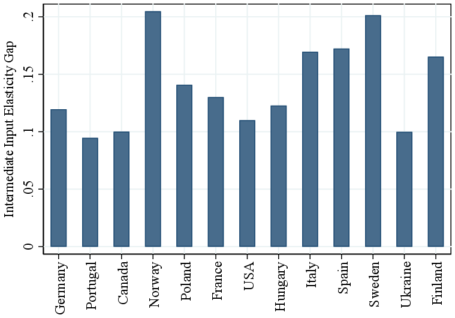
Notes: Figure A.1 shows the difference between the average intermediate input elasticity among firms in the top 5% of the within country-industry-year revenue distribution and the average at the bottom 50% percent. Results calculated using the GNR method.
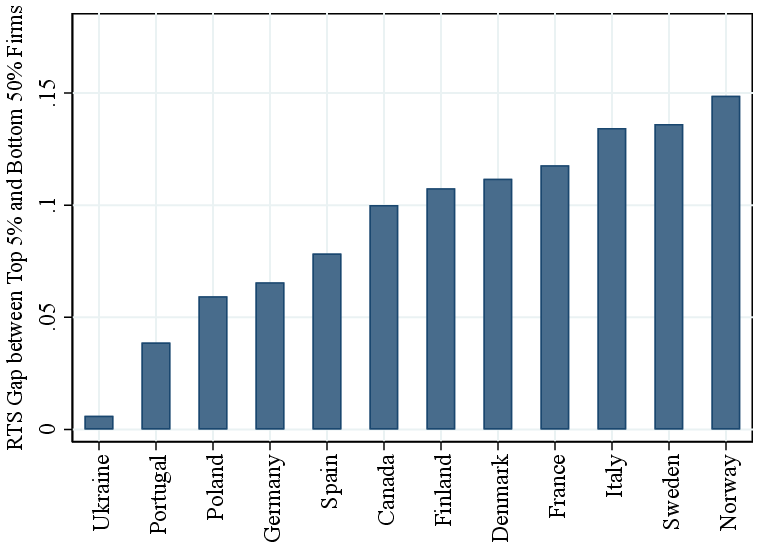
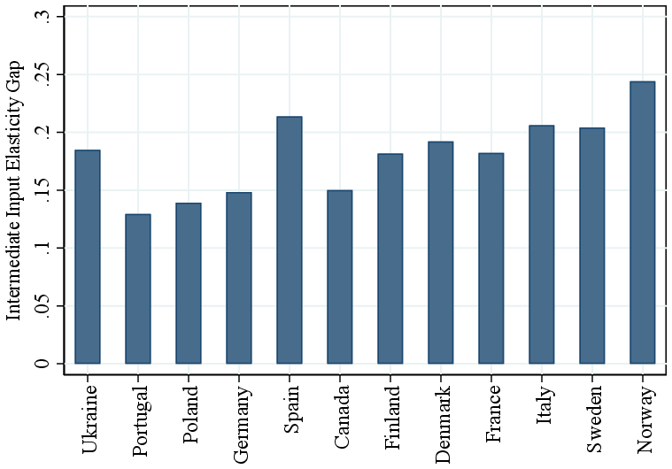
Notes: Figure A.2 shows the difference between the average intermediate input elasticity among firms in the top 5% of the within country-industry-year revenue distribution and the average at the bottom 50% percent. Results calculated using the Demirer method.
| Country | SD | P10 | P50 | P90 |
| Germany | \(0.38\) | \(-0.37\) | \(-0.02\) | \(0.42\) |
| Denmark | \(0.39\) | \(-0.41\) | \(-0.01\) | \(0.45\) |
| Spain | \(0.34\) | \(-0.40\) | \(0.00\) | \(0.36\) |
| Finland | \(0.32\) | \(-0.33\) | \(0.00\) | \(0.34\) |
| France | \(0.33\) | \(-0.35\) | \(-0.01\) | \(0.37\) |
| Italy | \(0.44\) | \(-0.44\) | \(0.00\) | \(0.49\) |
| Norway | \(0.29\) | \(-0.29\) | \(0.00\) | \(0.28\) |
| Poland | \(0.43\) | \(-0.43\) | \(-0.01\) | \(0.47\) |
| Portugal | \(0.39\) | \(-0.46\) | \(0.00\) | \(0.45\) |
| Sweden | \(0.31\) | \(-0.26\) | \(0.01\) | \(0.30\) |
| Ukraine | \(0.63\) | \(-0.68\) | \(-0.03\) | \(0.76\) |
| Total | \(0.38\) | \(-0.40\) | \(-0.01\) | \(0.42\) |
Notes: Table shows within-country cross-sectional moments of the TFP distribution calculated using GNR. TFP is estimated within each country-industry defined as two-digit NAICS. We then demean each distribution by country-industry and calculate within industry cross sectional moments. We then average across year-industries within a country. Total is the grand average across all countries and years.
| Country | Stat | Revenue | Intermediates | Wage Bill | Capital Stock |
| Germany | Mean | 16.17 | 15.17 | 14.48 | 13.49 |
| Std. Dev. | 2.021 | 2.250 | 2.005 | 2.874 | |
| P10 | 13.64 | 12.33 | 12.06 | 9.977 | |
| P50 | 16.14 | 15.11 | 14.40 | 13.43 | |
| P90 | 18.75 | 18.06 | 17.09 | 17.18 | |
| P99 | 20.96 | 20.36 | 19.11 | 19.54 | |
| Denmark | Mean | 14.67 | 13.93 | 13.21 | 12.57 |
| Std. Dev. | 2.768 | 3.005 | 2.706 | 3.275 | |
| P10 | 11.33 | 10.27 | 9.894 | 8.374 | |
| P50 | 14.32 | 13.47 | 12.99 | 12.40 | |
| P90 | 18.42 | 18.08 | 16.73 | 16.99 | |
| P99 | 20.56 | 20.18 | 18.76 | 19.74 | |
| Spain | Mean | 13.08 | 12.17 | 11.64 | 11.07 |
| Std. Dev. | 1.556 | 1.841 | 1.466 | 2.204 | |
| P10 | 11.27 | 9.922 | 9.897 | 8.245 | |
| P50 | 12.92 | 12.06 | 11.58 | 11.12 | |
| P90 | 15.08 | 14.53 | 13.43 | 13.76 | |
| P99 | 17.57 | 17.08 | 15.74 | 16.21 | |
| Finland | Mean | 13.14 | 11.92 | 11.65 | 10.65 |
| Std. Dev. | 1.671 | 1.989 | 1.761 | 2.072 | |
| P10 | 11.22 | 9.488 | 9.480 | 8.068 | |
| P50 | 12.99 | 11.79 | 11.68 | 10.52 | |
| P90 | 15.26 | 14.48 | 13.73 | 13.29 | |
| P99 | 18.01 | 17.34 | 16.23 | 16.25 | |
| France | Mean | 13.30 | 12.18 | 11.86 | 10.24 |
| Std. Dev. | 1.557 | 1.834 | 1.559 | 2.044 | |
| P10 | 11.54 | 10.02 | 10.05 | 7.715 | |
| P50 | 13.10 | 12.01 | 11.83 | 10.22 | |
| P90 | 15.32 | 14.54 | 13.74 | 12.71 | |
| P99 | 17.90 | 17.33 | 16.08 | 15.68 | |
| Italy | Mean | 13.70 | 12.65 | 11.73 | 11.26 |
| Std. Dev. | 1.619 | 1.926 | 1.865 | 2.325 | |
| P10 | 11.77 | 10.26 | 9.654 | 8.385 | |
| P50 | 13.60 | 12.59 | 11.83 | 11.14 | |
| P90 | 15.75 | 15.10 | 13.84 | 14.31 | |
| P99 | 18.15 | 17.59 | 16.12 | 16.79 |
Notes: Table shows within-country cross-sectional moments of the corresponding distribution. All variable in 2019 Euros. Firm-level revenue is either sales or operating revenue, if sales variables is missing.
| Revenue Shares | Elasticities and RTS | ||||||||
| Country | Stat. | Obs. | (1) | (2) | (3) | (4) | (5) | (6) | (7) |
| Intermediate | Labor | Capital | Intermediate | Labor | Capital | RTS | |||
| Germany | Mean | 271,202 | 0.45 | 0.24 | 0.25 | 0.42 | 0.47 | 0.06 | 0.96 |
| P10 | 0.13 | 0.06 | 0.01 | 0.14 | 0.21 | 0.01 | 0.88 | ||
| P50 | 0.43 | 0.22 | 0.08 | 0.39 | 0.49 | 0.05 | 0.96 | ||
| P90 | 0.79 | 0.46 | 0.58 | 0.74 | 0.70 | 0.12 | 1.00 | ||
| Denmark | Mean | 26,057 | 0.55 | 0.34 | 1.80 | 0.51 | 0.42 | 0.082 | 1.00 |
| P10 | 0.20 | 0.06 | 0.01 | 0.23 | 0.13 | \(-0.05\) | 0.82 | ||
| P50 | 0.57 | 0.27 | 0.11 | 0.50 | 0.42 | 0.03 | 1.00 | ||
| P90 | 0.87 | 0.67 | 6.20 | 0.83 | 0.73 | 0.32 | 1.20 | ||
| Spain | Mean | 3,833,412 | 0.48 | 0.31 | 0.69 | 0.45 | 0.46 | 0.04 | 0.95 |
| P10 | 0.15 | 0.08 | 0.01 | 0.16 | 0.21 | 0.01 | 0.85 | ||
| P50 | 0.48 | 0.27 | 0.15 | 0.43 | 0.47 | 0.04 | 0.95 | ||
| P90 | 0.79 | 0.57 | 1.30 | 0.76 | 0.69 | 0.07 | 1.00 | ||
| Finland | Mean | 563,541 | 0.37 | 0.29 | 0.32 | 0.34 | 0.50 | 0.08 | 0.91 |
| P10 | 0.10 | 0.08 | 0.01 | 0.11 | 0.25 | 0.01 | 0.78 | ||
| P50 | 0.33 | 0.27 | 0.09 | 0.30 | 0.52 | 0.07 | 0.92 | ||
| P90 | 0.69 | 0.52 | 0.62 | 0.63 | 0.71 | 0.14 | 1.00 | ||
| France | Mean | 4,389,186 | 0.39 | 0.28 | 0.14 | 0.37 | 0.49 | 0.06 | 0.92 |
| P10 | 0.12 | 0.09 | 0.01 | 0.14 | 0.28 | 0.02 | 0.82 | ||
| P50 | 0.36 | 0.27 | 0.05 | 0.33 | 0.51 | 0.05 | 0.92 | ||
| P90 | 0.70 | 0.49 | 0.28 | 0.63 | 0.69 | 0.10 | 1.00 | ||
| Italy | Mean | 3,492,067 | 0.43 | 0.21 | 0.52 | 0.39 | 0.43 | 0.05 | 0.87 |
| P10 | 0.12 | 0.04 | 0.01 | 0.14 | 0.21 | 0.01 | 0.73 | ||
| P50 | 0.41 | 0.18 | 0.09 | 0.36 | 0.45 | 0.05 | 0.89 | ||
| P90 | 0.77 | 0.42 | 0.86 | 0.69 | 0.63 | 0.10 | 1.00 | ||
| Norway | Mean | 575,877 | 0.42 | 0.30 | 0.30 | 0.40 | 0.48 | 0.05 | 0.93 |
| P10 | 0.12 | 0.09 | 0.01 | 0.13 | 0.26 | 0.00 | 0.82 | ||
| P50 | 0.41 | 0.29 | 0.05 | 0.37 | 0.50 | 0.04 | 0.94 | ||
| P90 | 0.74 | 0.54 | 0.54 | 0.70 | 0.69 | 0.10 | 1.00 | ||
| Poland | Mean | 546,413 | 0.48 | 0.17 | 0.92 | 0.44 | 0.43 | 0.06 | 0.93 |
| P10 | 0.10 | 0.03 | 0.01 | 0.12 | 0.19 | 0.00 | 0.79 | ||
| P50 | 0.49 | 0.12 | 0.12 | 0.41 | 0.43 | 0.05 | 0.95 | ||
| P90 | 0.84 | 0.38 | 1.80 | 0.79 | 0.67 | 0.15 | 1.10 | ||
| Portugal | Mean | 1,342,545 | 0.49 | 0.25 | 0.44 | 0.46 | 0.45 | 0.05 | 0.96 |
| P10 | 0.15 | 0.07 | 0.01 | 0.17 | 0.21 | 0.01 | 0.88 | ||
| P50 | 0.50 | 0.22 | 0.12 | 0.44 | 0.46 | 0.05 | 0.96 | ||
| P90 | 0.80 | 0.48 | 0.91 | 0.75 | 0.67 | 0.09 | 1.00 | ||
| Sweden | Mean | 949,905 | 0.41 | 0.30 | 0.27 | 0.39 | 0.48 | 0.05 | 0.91 |
| P10 | 0.13 | 0.09 | 0.00 | 0.14 | 0.26 | 0.01 | 0.78 | ||
| P50 | 0.39 | 0.29 | 0.05 | 0.36 | 0.49 | 0.04 | 0.92 | ||
| P90 | 0.71 | 0.53 | 0.60 | 0.66 | 0.68 | 0.10 | 1.10 | ||
| Ukraine | Mean | 394,734 | 0.40 | 0.30 | 1.90 | 0.30 | 0.60 | 0.10 | 1.00 |
| P10 | 0.10 | 0.00 | 0.00 | 0.10 | 0.30 | 0.00 | 0.80 | ||
| P50 | 0.40 | 0.20 | 0.20 | 0.30 | 0.60 | 0.10 | 1.00 | ||
| P90 | 0.80 | 0.60 | 2.40 | 0.60 | 0.80 | 0.20 | 1.10 | ||
| Total | Mean | 16,960,816 | 0.43 | 0.27 | 0.47 | 0.40 | 0.46 | 0.05 | 0.92 |
| P10 | 0.12 | 0.06 | 0.01 | 0.14 | 0.23 | 0.01 | 0.80 | ||
| P50 | 0.41 | 0.24 | 0.09 | 0.37 | 0.48 | 0.05 | 0.93 | ||
| P90 | 0.76 | 0.50 | 0.78 | 0.69 | 0.68 | 0.10 | 1.00 | ||
Notes: Table shows within-country cross-sectional moments of the corresponding distribution. Elasticities and returns to scale calculated using GNR applied within country-two digits NAICS industries. Firm-level revenue is either sales or operating revenue, if sales variables is missing.
11 RTS Variance-Component Model
The RTS process has three components: \[ RTS_{ih}=\underset{\text{permanent}}{\underbrace{\alpha _{i}}}+\underset{\text{AR(1)}}{\underbrace{z_{ih}}}+\epsilon _{ih}, \] where \(\alpha _{i}\sim N(0,\sigma ^{2}_{\alpha})\) is the fixed effect of firm \(i\), \(\epsilon _{ih}\sim N(0,\sigma ^{2}_{\epsilon})\) is a fully transitory i.i.d. shock at age \(h\), and \(z_{ih}\) is a persistent component that follows the process \[ z_{ih}=\rho _{z}z_{i,h-1}+\eta _{ih},\text{}z_{i,0}=0.0, \] where \(\eta _{ih}\) is an i.i.d. innovation with mean zero and variance \(\sigma ^{2}_{\eta}\). So, we estimate four parameters, \((\sigma ^{2}_{\alpha},\sigma ^{2}_{\eta},\rho,\sigma ^{2}_{\epsilon})\) by targeting the autovariance matrix of firm-level RTS. We compute the autocovariance matrix of RTS over the life cycle in levels in the data. We then estimate these parameters by minimizing the distance between empirical values and the corresponding simulated values. For this purpose we employ the multi-start global minimization algorithm, TikTak, which can be found at https://github.com/serdarozkan/TikTak.
| \(\sigma ^{2}_{\alpha}\) | \(\rho\) | \(\sigma ^{2}_{\eta}\) | \(\sigma ^{2}_{\epsilon}\) |
| 0.001 | 0.937 | 0.00025 | 0.00027 |
12 Model Appendix
12.1 Proof of Proposition 1
Without loss of generality, set the productivity of the unconstrained (CRTS) sector to 1. Then, the equilibrium input price equals 1. Given \(\tau \geq 0\), the input choice and output of constrained firm \(i\) are, respectively:
\[\begin{align*} x_i(\tau) = \left (\frac{\eta _i \cdot z_i}{1+\tau} \right)^\frac{1}{1-\eta _i} \quad \text{and} \quad y_i(\tau) = z_i^\frac{1}{1-\eta _i} \cdot \left (\frac{\eta _i}{1+\tau} \right)^\frac{\eta _i}{1-\eta _i}. \end{align*}\]
By market clearing, the aggregate input and output of unconstrained firms both equal
\[\begin{align*} 1 - \int _0^\chi x_i(\tau) di. \end{align*}\]
Thus, we can write the aggregate misallocation loss as
\[\begin{align*} \Delta Y \left (\tau \right) = Y^\star - Y(\tau) &= \int _0^\chi \left (y_i(0) - y_i(\tau) \right) d i - \left (\int _0^\chi x_i(0) di - \int _0^\chi x_i(\tau) di \right) \\ & = \int _0^\chi \left (y_i(0) - y_i(\tau) \right) - \left (x_i(0) - x_i(\tau) \right) di \\ & = \int _0^\chi y_i^\star \cdot \underbrace{\left [\left (1 - \left (\frac{1}{1+\tau} \right)^\frac{\eta _i}{1-\eta _i} \right) - \eta _i \cdot \left (1 - \left (\frac{1}{1+\tau} \right)^\frac{1}{1-\eta _i} \right) \right]}_{\equiv L_i(\tau)} di \end{align*}\]
Perform a second-order approximation of \(L_i(\tau)\) around \(\tau =0\). Since \(L_i(0) = L_i'(0) = 0\) and \(L_i''(0)= \frac{\eta _i}{1-\eta _i}\), it follows that \(L_i(\tau) \approx \frac{\tau ^2}{2} \frac{\eta _i}{1-\eta _i}\). Using the definition \(w_i \equiv \frac{y_i^\star}{Y^\star}\), the proof follows:
\[\begin{align*} \Delta \ln Y \left (\tau \right) = \frac{\Delta Y \left (\tau \right)}{Y^\ast} &\approx \frac{1}{Y^\ast} \cdot \int _0^\chi y_i^\star \cdot \frac{\tau ^2}{2} \frac{\eta _i}{1-\eta _i} di \\ &= \frac{\tau ^2}{2} \cdot \int _0^\chi w_i \cdot \frac{\eta _i}{1-\eta _i} di \\ &= \frac{\tau ^2}{2} \cdot \int _0^\chi w_i \cdot d i \cdot \int _0^\chi \frac{w_i}{\int _0^\chi w_j \cdot d j} \cdot \frac{\eta _i}{1-\eta _i} di. \end{align*}\]
12.2 Equilibrium Definition
We consider the stationary equilibrium of this model, which is described by a set of prices \((r,R,w)\) such that:
Agents optimize, giving rise to decision rules \(a'(\theta),c(\theta),o(\theta),k(\theta),\ell (\theta),y(\theta)\), where \(\theta =(a,z,h,\eta)\) summarizes the individual’s state, as well as an ergodic distribution \(G(\theta)\).
The financial intermediary maximizes profits, implying \(R=r+\delta -p\cdot (1+r)\).
Given \(G(\theta)\), all markets clear:
\[\begin{align*} L\equiv \int _{o=W}h\cdot dG(\theta) & =\int _{o=E}\ell (\theta)\cdot dG(\theta)\quad \text{(labor market)}\\ K\equiv \frac{1}{1-p}\int a\cdot dG(\theta) & =\int _{o=E}k(\theta)\cdot dG(\theta)\quad \text{(capital market)}\\ Y\equiv \int c(\theta)\cdot dG(\theta)+\delta \cdot K & =\int _{o=E}y(\theta)\cdot dG(\theta)\quad \text{(goods market)} \end{align*}\]
12.3 Model Robustness
Here, we discuss calibration details for the extended model versions with intermediate inputs in Section 5.2.4.
We introduce intermediate inputs as follows: an entrepreneur with technology \((\eta,z)\), and inputs capital \(k\), labor \(\ell\), and intermediates \(m\), produces output \[ z\cdot k^{\alpha _{K}}\cdot \ell ^{\alpha _{L}}\cdot m^{\eta -\alpha _{K}-\alpha _{L}}. \] We assume a simple round-about production network, such that gross output \(Y\) is used for consumption, investment, and intermediate inputs, \(Y=C+I+M\), with \(GDP\equiv C+I\).
We fix \(\alpha _{K}=0.13\) and \(\alpha _{L}=0.29\), corresponding to our estimated mean output elasticities.29
12.3.1 Adding intermediates, ex-post capital choice as in baseline
First, we maintain the baseline timing of input choices: capital is chosen after observing the realization of shocks, as are labor and intermediate inputs. We estimate the parameters in Table A.7 using the exact same strategy as in our baseline model versions. Rows 2 and 3 in Table A.8 show the resulting misallocation costs from raising the financial friction \(\lambda\) from 0 to 0.3, in both the calibration with and without RTS heterogeneity. Row 2 contains the results from the model that imposes the financial constraint on intermediates as well, while row 3 treats intermediates as fully flexible in line with the assumptions of our empirical approach (only capital and labor are subject to the constraint).
| Model with intermediate inputs | |||||||
| Constraint on K,L,M | Constraint on K,L | ||||||
| \(z\)-econ. | \((\eta,z)\)-econ. | \(z\)-econ. | \((\eta,z)\)-econ. | ||||
| A. Targeted moments | |||||||
| Fraction entrepreneurs | 0.117 | 0.117 | 0.121 | 0.116 | 0.116 | ||
| Transition rate W\(\rightarrow\)E | 0.021 | 0.021 | 0.022 | 0.021 | 0.021 | ||
| Top 10% revenue share | 0.799 | 0.811 | 0.779 | 0.811 | 0.790 | ||
| Top 1% revenue share | 0.522 | 0.523 | 0.555 | 0.511 | 0.539 | ||
| Top 0.1% revenue share | 0.282 | 0.281 | 0.278 | 0.285 | 0.280 | ||
| RTS: Top 5% vs Bottom 50% | 0.083 | 0* | 0.082 | 0* | 0.083 | ||
| Capital-output ratio | 2.970 | 2.969 | 2.962 | 2.972 | 2.979 | ||
| B. Internally calibrated parameters | |||||||
| Mean RTS | \(\mu _{\eta}\) | 0.776 | 0.841 | 0.732 | 0.695 | ||
| Standard deviation RTS | \(\sigma _{\eta}\) | — | 0.070 | — | 0.079 | ||
| Standard deviation log TFP | \(\sigma _{z}\) | 0.653 | 0.713 | 0.823 | 1.174 | ||
| Persistence TFP | \(\rho _{z}\) | 0.971 | 0.948 | 0.970 | 0.950 | ||
| Pareto tail TFP | \(\xi _{z}\) | 3.944 | — | 3.557 | — | ||
| Correlation \((z,\eta)\) | \(\rho _{z,\eta}\) | — | -0.580 | — | -0.355 | ||
| Discount factor | \(\beta\) | 0.915 | 0.908 | 0.916 | 0.907 | ||
Notes: Steady state calibration of the \((\eta,z)\) - and \(z\) -economy (both at \(\lambda =0.3\)), in the model versions with intermediate inputs (and ex-post capital choice). * not targeted.
| \(z\)-economy | \((\eta,z)\)-economy | Amplification | |
|
5.0 | 10.6 | +112% |
| Including intermediates inputs (M): | |||
|
9.3 | 46.3 | +398% |
|
3.6 | 11.3 | +214% |
|
1.0 | 1.9 | +81% |
Notes: This table reports static misallocation from the financial friction \(\lambda\), in log points, in alternative model versions (lowering \(\lambda\) from \(0.3\) to \(0\) when holding fixed occupational choice and factor supply). Row 1 corresponds to the baseline model without intermediate inputs. Rows 2, 3, and 4 add intermediate inputs in the production function. In row 2, there is a symmetric constraint on the three production factors: \(w\cdot \ell +R\cdot k+m\leq \frac{a}{\lambda}\). In row 3 and 4, intermediate inputs are assumed to be fully flexible: \(w\cdot \ell +R\cdot k\leq \frac{a}{\lambda}\). In row 4, period \(t\) capital is chosen in period \(t-1\), prior to the realization of period \(t\) shocks.
12.3.2 Adding intermediates, and pre-determined capital
Finally, we also change the timing of input choices, in addition to adding intermediate inputs in production: period \(t\) capital is chosen in period \(t-1\), so prior to the realization of period \(t\) shocks. This specification is rich enough such that the identification assumptions of GNR hold. The computation becomes more involved, as an agent’s inter-temporal choice includes (i) net savings \(a'\), (ii) capital \(k'\) (part of net savings), (iii) and occupation \(o'\). In our numerical solution, we exploit that when using resources after production \(x\) (“cash-on-hand”) as endogenous state variable, there is no need to keep track of the two assets separately; instead, the problem becomes a portfolio choice problem conditional on occupational choice. The agent’s dynamic problem is:
\[\begin{align*} V(x,h,z,\eta) & =\max _{c\geq 0,a'\geq 0,k'\geq 0,o'\in \left \{W,E\right \}}{u(c)}+\beta \cdot \mathbb{E}[V(x'_{o'}(a',k',h',z',\eta '),h',z',\eta ')]\\ \text{s.t}. & \quad c+a'=x,\\ & x_{W}(a,k,h,z,\eta)=w\cdot h+(1+r)\cdot a-R\cdot k,\\ & x_{E}(a,k,h,z,\eta)=\pi (a,k,z,\eta)+(1+r)\cdot a-R\cdot k, \end{align*}\]
where \(x_{W}\) (\(x_{E})\) denotes cash-on-hand of workers (entrepreneurs),30
This formulation is the natural extension of our general setup to pre-determined capital. The financial constraint applies to capital and labor, for every shock realization. The interpretation is, as before, that a fraction \(\lambda\) of the expenditures on capital \(R\cdot k_{t}\) and labor \(w\cdot \ell _{t}\) required for production in period \(t\) need to be financed with the owner’s period \(t\) net wealth, \(a_{t}.\) The difference to before is that capital \(k_{t}\) is chosen before the realization of period \(t\) shocks, while the labor choice \(\ell _{t}\) is made (as before) after observing current shocks.
Table A.9 displays the calibration, following again the same strategy as in the previously discussed model versions. Row 4 of Table A.8 shows the resulting static misallocation costs from raising the financial friction \(\lambda\) from 0 to 0.3. The overall level of static misallocation associated with \(\lambda\) is now much smaller, because capital is still chosen ex-ante, and so even with \(\lambda =0\), marginal products of capital are not equalized. Instead, eliminating the \(\lambda\) friction only removes dispersion in marginal labor input products (intermediates are fully flexible, and hence marginal intermediate input products are fully equalized, regardless of the value of \(\lambda\)). We re-iterate that our main point is not the overall level of misallocation associated with financial frictions, but rather the additional amount of misallocation (+81% in this model version) generated by allowing for realistic RTS heterogeneity in line with our empirical results.
| Data | Model | |||
| \(z\)-economy | \((\eta,z)\)-economy | |||
| A. Targeted moments | ||||
| Fraction entrepreneurs | 0.117 | 0.117 | 0.129 | |
| Transition rate W\(\rightarrow\)E | 0.021 | 0.021 | 0.021 | |
| Top 10% revenue share | 0.799 | 0.812 | 0.827 | |
| Top 1% revenue share | 0.522 | 0.504 | 0.544 | |
| Top 0.1% revenue share | 0.282 | 0.287 | 0.284 | |
| RTS: Top 5% vs Bottom 50% | 0.083 | 0* | 0.081 | |
| Capital-output ratio | 2.970 | 2.970 | 2.969 | |
| B. Internally calibrated parameters | ||||
| Mean RTS | \(\mu _{\eta}\) | 0.703 | 0.632 | |
| Standard deviation RTS | \(\sigma _{\eta}\) | — | 0.063 | |
| Standard deviation log TFP | \(\sigma _{z}\) | 0.968 | 1.177 | |
| Persistence TFP | \(\rho _{z}\) | 0.967 | 0.958 | |
| Pareto tail TFP | \(\xi _{z}\) | 3.350 | — | |
| Correlation \((z,\eta)\) | \(\rho _{z,\eta}\) | — | -0.102 | |
| Discount factor | \(\beta\) | 0.905 | 0.906 | |
Notes: Steady state calibration of the \((\eta,z)\) - and \(z\) -economy (both at \(\lambda =0.3\)), in the model versions with intermediate inputs, pre-determined capital choice, and the financial constraint imposed on labor and capital expenditures (not on intermediates). * not targeted.
13 Additional Figures and Tables
| Industry | NAICS | N | RTS | M-elas | L-elas | K-elas |
| Agriculture | 11 | 37,600 | 1.00 | 0.53 | 0.41 | 0.05 |
| Mining | 21 | 16,500 | 1.00 | 0.46 | 0.44 | 0.10 |
| Energy | 22 | 2,500 | 1.00 | 0.59 | 0.34 | 0.07 |
| Construction | 23 | 738,300 | 1.00 | 0.55 | 0.41 | 0.04 |
| Manufacturing | 31 | 69,100 | 1.01 | 0.61 | 0.37 | 0.03 |
| 32 | 119,700 | 1.01 | 0.59 | 0.38 | 0.03 | |
| 33 | 247,100 | 1.00 | 0.55 | 0.42 | 0.03 | |
| Wholesale Trade | 41 | 366,400 | 0.99 | 0.71 | 0.26 | 0.02 |
| Retail Trade | 44 | 614,400 | 1.00 | 0.75 | 0.22 | 0.02 |
| 45 | 185,400 | 1.00 | 0.71 | 0.27 | 0.02 | |
| Transportation and warehousing | 48 | 109,300 | 0.99 | 0.58 | 0.36 | 0.05 |
| 49 | 13,300 | 1.01 | 0.63 | 0.33 | 0.04 | |
| Information and cultural | 51 | 39,200 | 1.00 | 0.56 | 0.41 | 0.04 |
| Finance and insurance | 52 | 33,600 | 0.65 | 0.57 | -0.05 | 0.13 |
| Real estate | 53 | 69,100 | 1.01 | 0.54 | 0.40 | 0.07 |
| Professional Services | 54 | 260,000 | 0.98 | 0.48 | 0.47 | 0.03 |
| Management of companies and enterprises | 55 | 27,700 | 1.03 | 0.59 | 0.39 | 0.05 |
| Administrative and support | 56 | 186,800 | 1.00 | 0.53 | 0.42 | 0.04 |
| Education | 61 | 26,700 | 0.98 | 0.51 | 0.45 | 0.03 |
| Healthcare | 62 | 111,300 | 0.59 | 0.40 | 0.05 | 0.14 |
| Arts, entertainment and recreation | 71 | 66,000 | 0.98 | 0.51 | 0.44 | 0.03 |
| Accommodation and food services | 72 | 552,500 | 0.99 | 0.59 | 0.37 | 0.04 |
| Other Services | 81 | 427,600 | 0.77 | 0.54 | 0.16 | 0.06 |
Notes: The numbers of observations are rounded to the nearest hundreds.
| RTS | K-elasticity | L-elasticity | M-elasticity | |
| Fraction of variation (variance) within industry | ||||
| Two-digit NAICS | 23.3% | 61.9% | 65.9% | 72.7% |
| Four-digit NAICS | 22.0% | 57.8% | 58.6% | 63.6% |
| Standard deviation within industry | ||||
| Two-digit NAICS | 0.052 | 0.031 | 0.152 | 0.149 |
| Four-digit NAICS | 0.051 | 0.030 | 0.143 | 0.139 |
Notes: Table A.11 shows the within-industry variations for the three output elasticities and RTS estimates. It includes both the within-industry fraction of total variance and the within-industry standard deviation.
| Between-Industry Variation | Within-Industry Variation | |||
| Labor | Capital | Labor | Capital | |
| Intermediates | -0.3 | -0.7 | -0.9 | -0.4 |
| Labor | 1.0 | -0.4 | 1.0 | 0.0 |
Notes: Table A.12 shows the correlation coefficients of the output elasticity estimates of the three inputs. The between-industry results show the weighted correlation of the average output elasticities of each two-digit NAICS industry, and the within-industry results demean the output elasticities at the two-digit NAICS level.
| Mean | Median | St.dev | P50-P10 | P90-P50 | P99-P50 | |
| Revenue | 14.15 | 13.95 | 1.58 | 1.67 | 2.31 | 4.67 |
| Intermediates | 13.56 | 13.35 | 1.68 | 1.76 | 2.46 | 4.93 |
| Labor | 12.91 | 12.77 | 1.49 | 1.67 | 2.12 | 4.10 |
| Capital | 12.03 | 11.98 | 1.99 | 2.39 | 1.87 | 5.27 |
Notes: This table shows the moments of the distribution of revenues, intermediate inputs, labor, and capital stock in log real Canadian dollars for the Canadian manufacturing sector. The total number of observations is 436,000.
| Mean | Median | St.dev | P50-P10 | P90-P50 | P99-P50 | ||
| Returns to scale | 1.00 | 1.00 | 0.02 | 0.02 | 0.02 | 0.07 | |
| Output Elasticities | |||||||
| Intermediates | 0.57 | 0.56 | 0.14 | 0.16 | 0.18 | 0.37 | |
| Labor | 0.40 | 0.41 | 0.13 | 0.17 | 0.15 | 0.28 | |
| Capital | 0.03 | 0.03 | 0.03 | 0.03 | 0.04 | 0.09 | |
Notes: This table shows the moments of the distribution of estimates for RTS and output elasticities for the Canadian manufacturing sector. The total number of observations is 436,000.
| (1) | (2) | |
| \(RTS\) | –0.056*** | –0.539*** |
| (0.002) | (0.013) | |
| \(TFP\ Percentile\) | -0.020*** | 0.142*** |
| (0.001) | (0.002) | |
| N | 4.1M | 3.4M |
| Constant | Y | Y |
| Industry FE | Y | Y |
| First difference | Y | |
| Pseudo R2 | 0.010 | 0.018 |
Notes: The table reports two probit regressions of firm exit on RTS and within-industry TFP percentiles. To facilitate comparison, both regressors are standardized to have a mean of 0 and a standard deviation of 1. Firm exit is an indicator equal to 1 if a firm is present in the data in one year but not in the following year. Robust standard errors are clustered at the firm level. We first-difference both regressors in column (2). \(^{***}p<0.01\), \(^{**}p<0.05\), \(^{*}p<0.1\).
| \(\Delta y_{jt}\) | ||||||
| (1) | (2) | (3) | (4) | (5) | (6) | |
| Industry-level TFP shock | Global Financial Crisis | |||||
| \(Shock_{t}\) | -2.01*** | -1.69*** | -8.70*** | 0.02*** | -0.02*** | -0.57*** |
| (0.13) | (0.13) | (0.77) | (0.00) | (0.00) | (0.14) | |
| \(RTS_{j,t-1}\) | 0.02*** | -0.28*** | -0.28*** | 0.02*** | 0.00 | 0.00 |
| (0.00) | (0.00) | (0.00) | (0.00) | (0.00) | (0.00) | |
| \(RTS_{j,t-1}\times\)\(Shock_{t}\) | 4.58*** | 4.23*** | 4.46*** | -0.02*** | -0.02*** | -0.01*** |
| (0.15) | (0.15) | (0.16) | (0.00) | (0.00) | (0.00) | |
| Observations | 3.6M | 3.6M | 3.6M | 3.6M | 3.6M | 3.6M |
| Constant | Y | Y | Y | Y | Y | Y |
| Control: | ||||||
| Revenue and Age | Y | Y | Y | Y | ||
| Revenue and Age \(\times Shock_{t}\) | Y | Y | ||||
| \(R^{2}\) | 0.01 | 0.05 | 0.05 | 0.00 | 0.00 | 0.05 |
Notes: Robust standard errors are clustered at the firm level reported. In columns (1)-(3), we use the industry-level change in TFP as the aggregate shock, which is calculated as the change in the average firm-level TFP, \(\nu _{jt}\), for all firms in the industry in that year. In columns (4)-(6), we use a time dummy for the 2007-2008 global financial crisis as the aggregate shock. We control for log revenue and log firm age and the interaction between the two in columns (2) and (5), and control for their interactions with the aggregate shock in columns (3) and (6). \(^{***}p<0.01\), \(^{**}p<0.05\), \(^{*}p<0.1\).
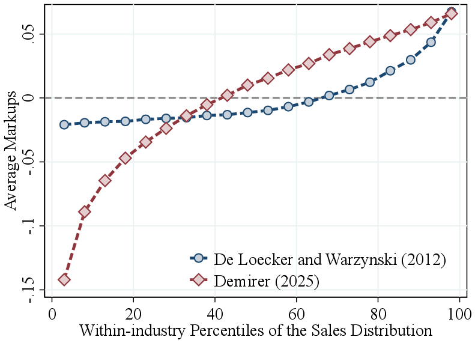
Notes: Figure A.3 presents estimated markups across the firm-size distribution. We report estimates based on the value-added translog production function approach following De Loecker and Warzynski (2012) (DLW) and those obtained using the Demirer method (Demirer, 2025). In both cases, production functions are estimated separately by industry. Firms are sorted by their within-industry revenue ranks, and the figure plots the average markup within ranks. Markups are demeaned relative to the industry average.
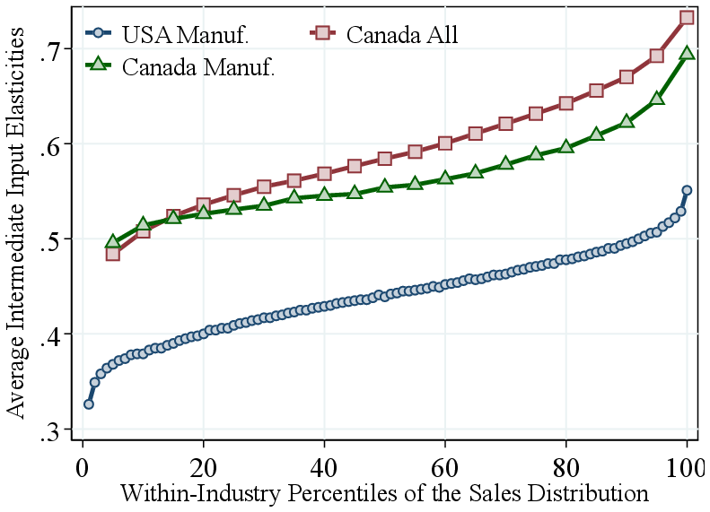
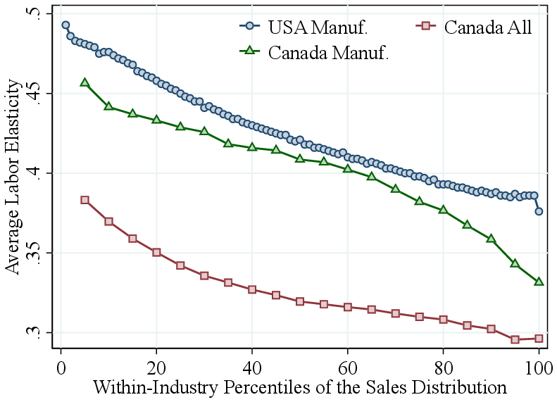
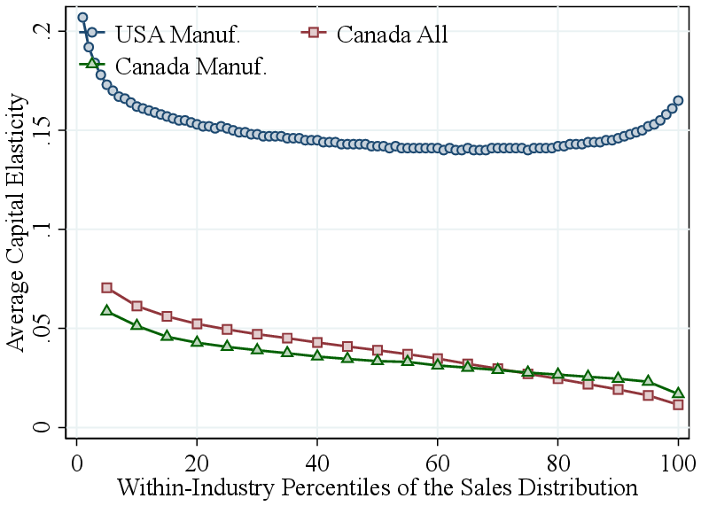
Notes: Figure A.4 shows returns to scale and output elasticities for the US manufacturing sector, for the Canadian private sector, and for the Canadian manufacturing sector. In all figures, we sort firms by within-industry revenue ranks and plot the average within ranks. Panel A shows the returns to scale relative to the industry average.
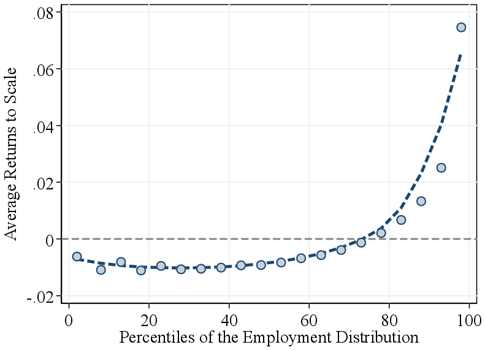
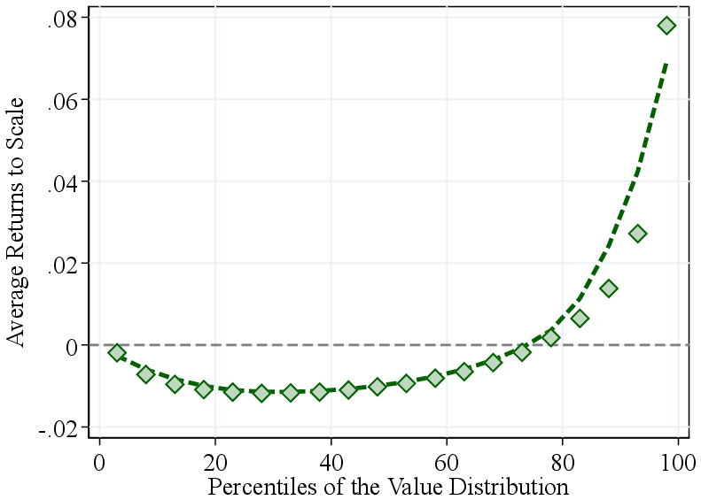
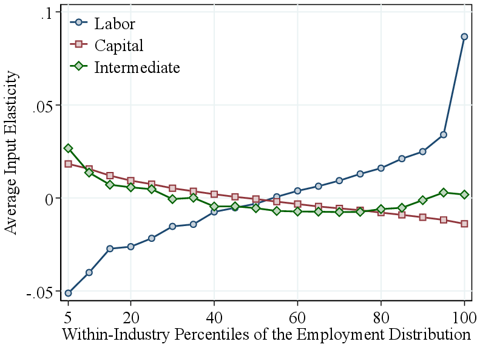
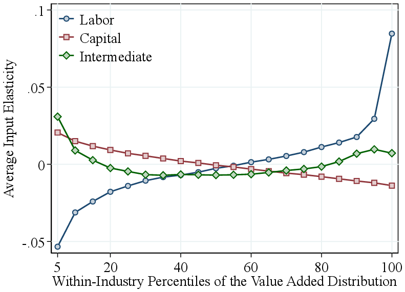
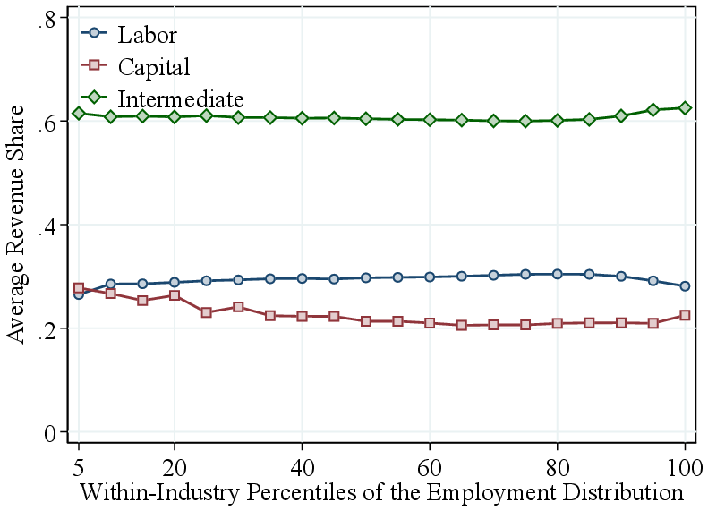
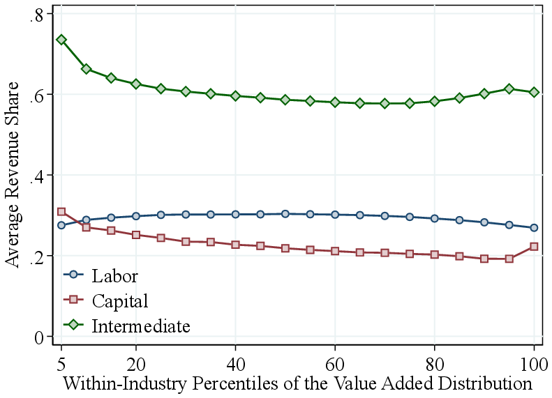
Notes: Figure A.5 shows results sorting firms by within-industry employment ranks (left panels) and within-industry value added ranks (right panels). We use the intermediate input and labor costs and the value of the capital stock to construct the revenue shares.
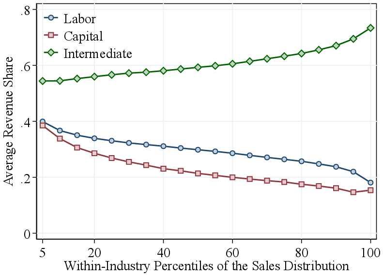
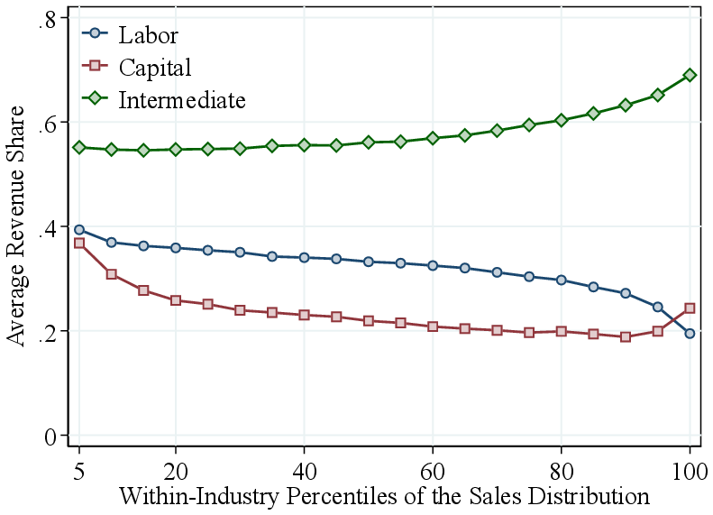
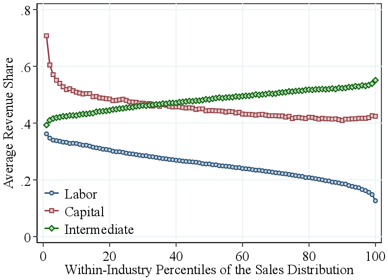
Notes: Figure A.6 shows revenue shares across the firm-size distribution for Canada and for the US manufacturing sector. In each plot, we sort firms by within-industry revenue ranks and then average the revenue share across all firms within corresponding percentiles. We use the intermediate input and labor costs and the value of the capital stock to construct the revenue shares. Results for Canada are presented in ventiles.
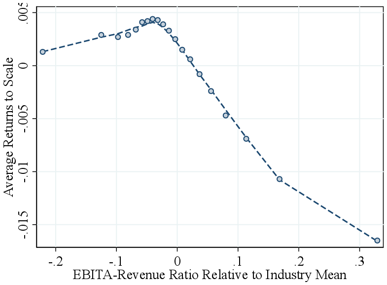
Notes: Figure A.7 plots the relationship between the returns to scale and the ratio of EBITA-revenue ratio. EBITA is computed as total revenue net of intermediate inputs and labor costs. Both variables are demeaned at the industry level.
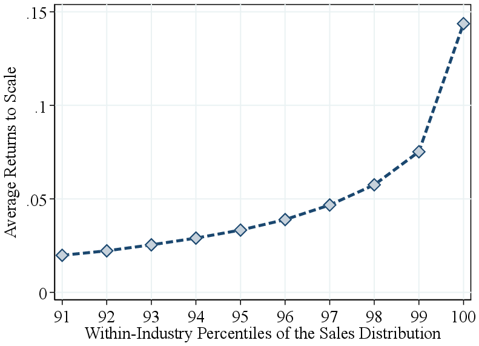
Notes: Figure A.8 plots the RTS and TFP estimates against the firm sales percentile for the top 10% firms. In both panels, we sort firms by within-industry revenue ranks and plot the average within ranks. Panel A shows the returns to scale relative to the industry average. Panel B shows the TFP percentile calculated within each industry.
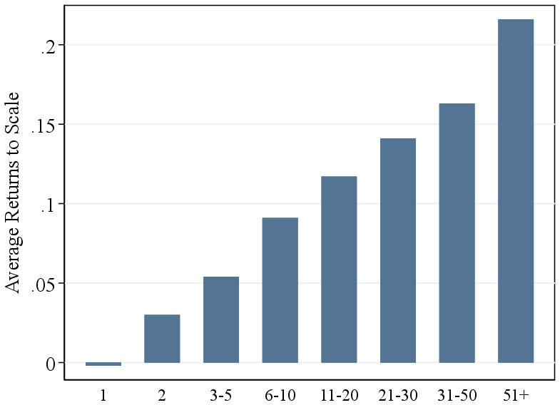
Notes: Figure A.9 plots the average RTS for eight groups of firms with a different number of establishments. RTS is demeaned at the industry level.
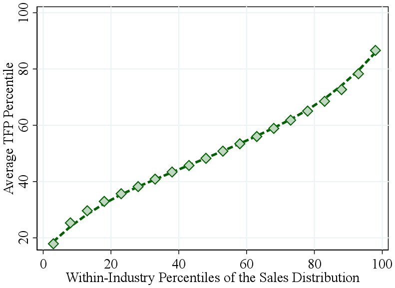
Notes: We re-estimate a Cobb-Douglas production function for each industry. We plot the relationship between TFP percentile and revenue percentile. Both TFP and revenue percentiles are calculated within industry.
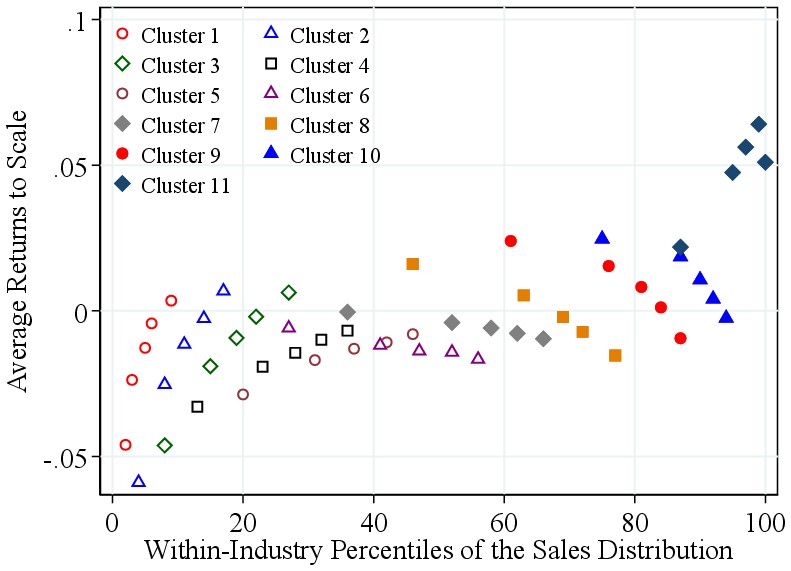
Notes: Figure A.11 shows estimated average RTS when firms are clustered by maximum size. We cluster firms within each industry into 11 groups based on each firm’s maximized within-industry-year revenue percentile throughout its life cycle. We exclude firms with fewer than 10 years of data and estimate the nonparametric production function separately for each cluster and industry. We pool all observations of firms that belong to the same cluster across industries. Then, we plot, for each cluster separately, the demeaned RTS against the within-industry revenue percentile. Each dot in the figure represents 20% of all the firm-year observations in one cluster.
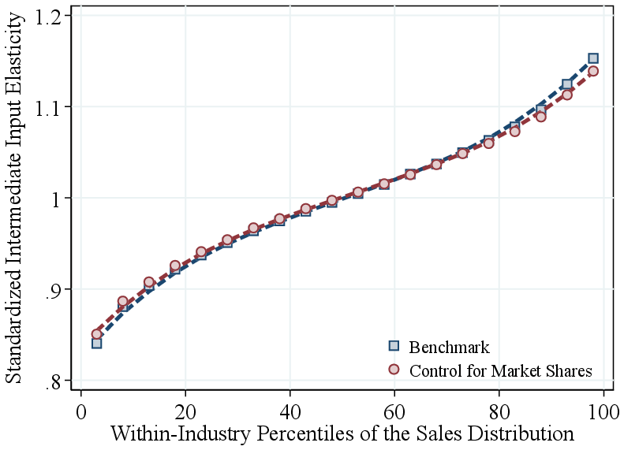
Notes: Figure A.12 presents the intermediate input elasticity estimates from a specification that controls for firm market shares (as proxy for market power), compared to the benchmark estimates. Specifically, we run \(s_{jt}=\ln (D^{\mathcal{E}}(k_{jt},\ell _{jt},m_{jt}))+\tau ^{1}x^{y}_{jt}+\tau ^{2}\left (x^{y}_{jt}\right)^{2}+\tau ^{3}\left (x^{y}_{jt}\right)^{3}-\varepsilon _{jt}\), where \(x^{y}_{jt}\) represents firm \(j\) ’s revenue share in its industry at time \(t\). We instrument the market share using its one-period lags. We note that the intercept coefficient of the regression contains information on both the average intermediate elasticity and the average markup, and we cannot separately identify these two components. We thus normalize the median intermediate elasticity to one for both versions of the estimates and plot the normalized elasticities across the firm-size distribution.
Footnotes
E.g., in an efficient economy with Cobb-Douglas technology, the elasticity of optimal firm output to TFP (\(\frac{1}{1-RTS})\) is five times larger for a firm with RTS of 0.98 compared to a firm with RTS of 0.90. They are also quantitatively important for the costs of financial constraints (Section 5).↩︎
As expected, the correlation between revenue shares and elasticities is strongest for intermediate inputs, which we treat as a flexible input in our estimation. For labor and capital, correlations remain positive but weaker, potentially reflecting adjustment costs or input market power.↩︎
In a counterfactual exercise imposing homogeneous RTS, TFP increases monotonically with revenue. This emphasizes the importance of technological flexibility in TFP estimation.↩︎
Our results are also robust to using output market shares as proxies for unobserved price elasticities (à la De Loecker et al. (2016)) in our implementation of GNR.↩︎
To isolate the novel role of RTS heterogeneity, we use this standard framework that abstracts from several empirically relevant features of production, such as intermediate inputs and pre-determined inputs. We show in model extensions that our findings are robust to introducing these richer model features, including those employed in our empirical framework.↩︎
Intuitively, if the production function were Cobb-Douglas, the expenditure share would be uncorrelated with input levels, and its output elasticity would be constant (equal to the mean share). This direct relationship (from the FOC) holds under the assumption that firms are price takers in intermediate input markets and do not face adjustment costs when choosing intermediates.↩︎
This is a slight abuse of language: for example, this value-added function does not contain transitory shocks and is derived by removing the contribution of intermediate inputs to output (including their interactions with capital and labor).↩︎
This specification requires a normalization: we set the sum of the three output elasticities, \(\varepsilon ^{\mathfrak{g}}_{K}+\varepsilon ^{\mathfrak{g}}_{L}+\varepsilon ^{\mathfrak{g}}_{M}=1\), so that \(\eta _{jt}\) directly measures RTS. See Appendix A.1 for more details.↩︎
CEEDD also covers all unincorporated firms—typically small businesses owned by self-employed individuals—accounting for 9.5% of GDP in 2005 (Baldwin and Rispoli (2010)). We exclude unincorporated firms because they do not report capital stock.↩︎
We use the 2021 vintage of Orbis, accessed through Wharton Research Data Services. In practice our data cover from the early 1990s to 2019 with substantially better coverage starting in 2005. For detailed information on constructing a consistent dataset, see Kalemli-Özcan et al. (2024). Data on intermediate inputs and capital stock are available only for a subset of eleven countries.↩︎
To be precise, we calculate within-industry moments from firm-level estimates for each year, then average across industries and time.↩︎
Consistent with earlier studies (e.g., Basu and Fernald (1997); Ruzic and Ho (2023); Gao and Kehrig (2017)), we also find substantial differences in average RTS across industries (see Table A.10), ranging from 0.59 (for Healthcare) to 1.03 (for Management of Companies and Enterprises).↩︎
We validate this prediction in the data by showing that high-RTS firms’ revenues respond more strongly to aggregate TFP shocks (Table A.16).↩︎
RTS is not fixed over time, and firms are subject to adjustment costs. Thus, increasing returns to scale do not imply unbounded expansion. Furthermore, other studies commonly estimate RTS above 1 for some industries or firms as well (e.g., Gandhi et al. (2020) and Demirer (2025)).↩︎
Our estimated average capital elasticity is lower than typical estimates because, following the literature, we construct the capital stock using the PIM and include only tangible capital such as structures and equipment. This excludes other forms of capital typically included in the aggregate measure of capital, such as intangible capital and inventories. When we estimate the production function using a broader capital definition based on net asset values from balance sheets, the average intermediate, labor, and capital elasticities become 0.58, 0.30, 0.12, respectively.↩︎
Note that the intermediate elasticity does not equal its revenue share because of the ex-post shock \(\varepsilon\). See Appendix A for details.↩︎
This aggregation preserves average elasticities because the production function is linear in its coefficients even when it is nonlinear in inputs.↩︎
This is an exact control if demand takes the common (nested) logit or CES forms. De Loecker et al. (2020) use this approach to control for unobserved output and intermediate input prices while De Loecker et al. (2016) apply it to control for unobserved intermediate input prices conditional on observed output prices. Following them, we use a cubic function of market shares (defined at the two-digit NAICS). Since period-\(t\) market shares may be correlated with transitory productivity shocks, we estimate a modified first-stage equation with GMM using lagged market shares as instruments for current shares. See Appendix A.2 for details.↩︎
Demirer (2025) adopts a control-variable approach to address endogeneity in the presence of the two unobserved productivity components. First, a control variable for relative factor-augmenting productivity is constructed using capital and the flexible input ratio: under homothetic separability, this ratio is strictly monotonic in \(\omega ^{M}_{jt}\), conditional on capital, and independent of Hicks-neutral productivity. Second, a control variable for Hicks-neutral productivity is constructed using capital, intermediate inputs, and the control variable for intermediate-augmenting productivity. Conditional on these control variables, capital and composite input elasticities are identified from their covariation with output. Finally, since both labor and intermediates are flexible, Demirer exploits the two FOCs to link the ratio of their output elasticities to the ratio of observed expenditure shares, allowing for separate identification of labor and intermediate elasticities.↩︎
Alternatively, one could assume that unconstrained firms also exhibit decreasing RTS, but the presence of free entry ensures constant RTS at the sectoral level.↩︎
We assume that the friction affects all inputs symmetrically to focus on overall firm size distortions, without introducing additional distortions on relative input use (as would be the case, for example, with a collateral constraint on \(k\) only). In the extension with intermediate inputs in Section 5.2.4, we also consider asymmetric constraints and show that the main mechanism is unchanged.↩︎
The death rate affects in particular wealth accumulation at the bottom of the wealth distribution, as newborns enter with zero wealth. The bottom 50% wealth share equals 3.3% in the \((\eta,z)\)-model and 2.2% in the \(z\)-model, in the ballpark of the value for Canada of 4.9%.↩︎
Defining the debt \(d\) of entrepreneurs as \(d=\max{\{0,k-a\}}\), the aggregate debt-to-capital ratio is 81% in the \((\eta,z)\)-model and 71% in the \(z\)-model, both in line with Canada’s ratio of roughly 70%.↩︎
We target the observed RTS–size gradient from the baseline GNR estimates. Our clustering analysis confirms that this gradient predominantly reflects ex-ante technology differences across firms, supporting the modeling choice of treating \(\eta\) as an exogenous firm characteristic.↩︎
To see this, consider two firms, \(j=1,2\), that differ in their RTS (\(\eta _{1}>\eta _{2}\)) and TFP, producing according to \(y_{j}=z_{j}\cdot \ell ^{\eta _{j}}_{j}\). Even when RTS (a unit-free elasticity) as well as input and output levels are known, the ratio of measured TFP is \[ \frac{z_{1}}{z_{2}}=\frac{y_{1}}{y_{2}}\cdot \left (\frac{\ell _{1}}{\ell _{2}}\right)^{-\eta _{1}}\cdot \underbrace{\frac{1}{\ell ^{\eta _{1}-\eta _{2}}_{2}},}_{\text{unit dependence}} \] which depends on the level—and hence the unit of measurement—of the input \(\ell\). Relative TFP therefore lacks a cardinal interpretation when firms operate different production functions. This issue arises both in our model and in some of our empirical approaches.↩︎
Intermediate inputs are fully flexible, allowing the first stage of GNR to consistently estimate their elasticity. Capital is pre-determined, while labor is endogenous to current TFP; due to the persistence of wealth and the structure of the financial constraint, labor inputs are autocorrelated, making lagged labor a valid instrument in the second stage. Clustering is required because firms with different \(\eta\) operate distinct production technologies.↩︎
We need one more technical assumption (Assumption 5 in GNR) on the support of (\(k_{jt},\ell _{jt}\)). In particular, we have
\[\begin{equation} \mathbb{\mathcal{D}}(k_{jt},\ell _{jt},m_{jt})\equiv \int \frac{\partial}{\partial m_{jt}}f(k_{jt},\ell _{jt},m_{jt})dm_{jt}=f(k_{jt},\ell _{jt},m_{jt})-\varPsi (k_{jt},\ell _{jt}), \end{equation}\]
where \(\Psi (k_{jt},\ell _{jt})\) is the constant of integration (the component of the production function unrelated to \(m_{jt}\)). We can then define the residual output as \(\tilde{y}_{jt}\equiv y_{jt}-\varepsilon _{jt}-\mathbb{\mathcal{D}}(k_{jt},\ell _{jt},m_{jt})=\varPsi (k_{jt},\ell _{jt})+\omega _{jt}\). Plugging in the structure of \(\omega _{jt}\) from Assumption 3 and defining \(\xi _{jt}=\omega _{jt}-\mathbb{E}[\omega _{jt}|\omega _{jt-1}]\), we get our second estimating equation,
\[\begin{equation} \tilde{y}_{jt}=\Psi \left (k_{jt},\ell _{jt}\right)+h\left (\tilde{y}_{jt-1}-\Psi \left (k_{jt-1},\ell _{jt-1}\right)\right)+\xi _{jt},\label{eq:ytilde} \end{equation}\]
where \(\tilde{y}_{jt}\) is observable given the first-stage estimates of \(\varepsilon _{jt}\) and \(\mathbb{\mathcal{D}}(k_{jt},\ell _{jt},m_{jt})\). Our assumptions on the firm’s information set give us \(\mathbb{E}[\xi _{jt}|k_{jt},\ell _{jt-1},k_{jt-1},\tilde{y}_{jt-1},\ell _{jt-2}]=0\) (i.e., \(\mathbb{E}[\xi _{jt}|\mathcal{I}_{jt-1}]=0\)), which we use with equation 3 to identify \(\Psi\), \(h\), and thus \(\xi _{jt}\).↩︎
As pointed out by GNR, this implies that the estimator is a sieve-M estimator, which allows us to treat the polynomials as if they were the true parametric structure. This provides us with estimates of the production function as well as \(\hat{\omega}_{jt}\), \(\hat{\xi}_{jt}\), and \(\hat{\bar{\omega}}_{jt}\equiv \hat{h}(\hat{\omega}_{jt-1})\). We then obtain the firm-level measure of RTS as sum of the output elasticities of capital and labor, combined with the previously estimated intermediate input elasticity: \(\eta _{jt}\equiv \eta (k_{jt},\ell _{jt},m_{jt})=\varepsilon ^{Y}_{K}(k_{jt},\ell _{jt},m_{jt})+\varepsilon ^{Y}_{L}(k_{jt},\ell _{jt},m_{jt})+\varepsilon ^{Y}_{M}(k_{jt},\ell _{jt},m_{jt})\). 3 3 While the notation in this section assumes a common production function for all firms, in practice we allow the production function to vary across different groupings, such as two-digit NAICS industries and clusters of firms with similar combinations of inputs and output.↩︎
These values correspond to an estimation that expanded the definition of \(K\) as total assets, more in line with conventional macroeconomic aggregates that imply a capital share of value added of around one-third.↩︎
Prospective workers will always optimally set the capital choice to zero, \(k'=0\). and the variable profit of entrepreneurs is given by
\[\begin{align*} \pi (a,k,z,\eta) & =\max _{\ell \geq 0,m\geq 0}z\cdot k^{\alpha _{K}}\cdot \ell ^{\alpha _{L}}\cdot m^{\eta -\alpha _{K}-\alpha _{L}}-w\cdot \ell -m\\ \text{s.t}. & \quad w\cdot \ell +R\cdot k\leq \frac{a}{\lambda}. \end{align*}\]↩︎